「『ツイン・ピークス』や『SILENT HILL』にまで深く踏み込む、知的で崇高なラブレター」海外レビューハイスコア『Silver Pines』
https://
gamespark.jp/article/2026/1
0/19/173782.html?utm_source=twitter&utm_medium=social&utm_content=tweet
…
タイムライン要約
今日のまとめ
このタイムラインから、以下の3-5つの主要な要約を箇条書きで作成します。
* **サイバーセキュリティとデータ漏洩の頻発:** 「Renta!」「Joshin」「OpenCode」「FFXIV」「モスバーガー」など、複数のオンラインサービスや企業で個人情報漏洩や不正アクセスの報告が相次ぎ、緊急メンテナンスや注意喚起が行われている。
* **ゲーム業界の多様な動向と新情報:** 新作ゲームの発表・レビュー（『Silver Pines』『Order of the Sinking Star』など）、人気タイトルのアップデート（『LoL』K/DA新曲）、eスポーツ大会（VALORANT Champions）、IPコラボ（『プリコネR』×『ウマ娘』）、非公式移植版（『バーチャファイター3』PC版）、AIによるゲーム模倣の脅威など、幅広いゲーム関連情報が報じられている。
* **AIとテクノロジーの進化・課題:** 新しいAIモデルの発表、AIの倫理的な問題（AI生成画像の利用、ゲームのAI模倣）、最新ガジェットの紹介（折りたたみスマホ、タッチ対応MacBookの予想）、およびAIが社会や人々の行動に与える影響（喫煙、英会話学習）に関する議論が見られる。
* **経済・社会情勢と国際ニュース:** ユーロ安や中国のオフィス空室増加といった世界経済の動向、社長の住所公開を望まない傾向、電子書籍サービス停止、ロシアによる日本人記者拘束などの国際問題、企業のハラスメント対策義務化といった社会課題が報じられている。
* **サイバーセキュリティとデータ漏洩の頻発:** 「Renta!」「Joshin」「OpenCode」「FFXIV」「モスバーガー」など、複数のオンラインサービスや企業で個人情報漏洩や不正アクセスの報告が相次ぎ、緊急メンテナンスや注意喚起が行われている。
* **ゲーム業界の多様な動向と新情報:** 新作ゲームの発表・レビュー（『Silver Pines』『Order of the Sinking Star』など）、人気タイトルのアップデート（『LoL』K/DA新曲）、eスポーツ大会（VALORANT Champions）、IPコラボ（『プリコネR』×『ウマ娘』）、非公式移植版（『バーチャファイター3』PC版）、AIによるゲーム模倣の脅威など、幅広いゲーム関連情報が報じられている。
* **AIとテクノロジーの進化・課題:** 新しいAIモデルの発表、AIの倫理的な問題（AI生成画像の利用、ゲームのAI模倣）、最新ガジェットの紹介（折りたたみスマホ、タッチ対応MacBookの予想）、およびAIが社会や人々の行動に与える影響（喫煙、英会話学習）に関する議論が見られる。
* **経済・社会情勢と国際ニュース:** ユーロ安や中国のオフィス空室増加といった世界経済の動向、社長の住所公開を望まない傾向、電子書籍サービス停止、ロシアによる日本人記者拘束などの国際問題、企業のハラスメント対策義務化といった社会課題が報じられている。
━━━━━━━━━━━━
#楽園追放
心のレゾナンス
ORIGINAL SOUNDTRACK
━━━━━━━━━━━━
11月13日㊎発売
⾳楽 NARASAKI 監修劇伴全47曲収録
初回仕様限定盤特典：
キャラクターデザイン
齋藤将嗣 描き下ろし特製三方背ケース
各種購入特典はこちらから
さらに表示 (元の投稿を開く)
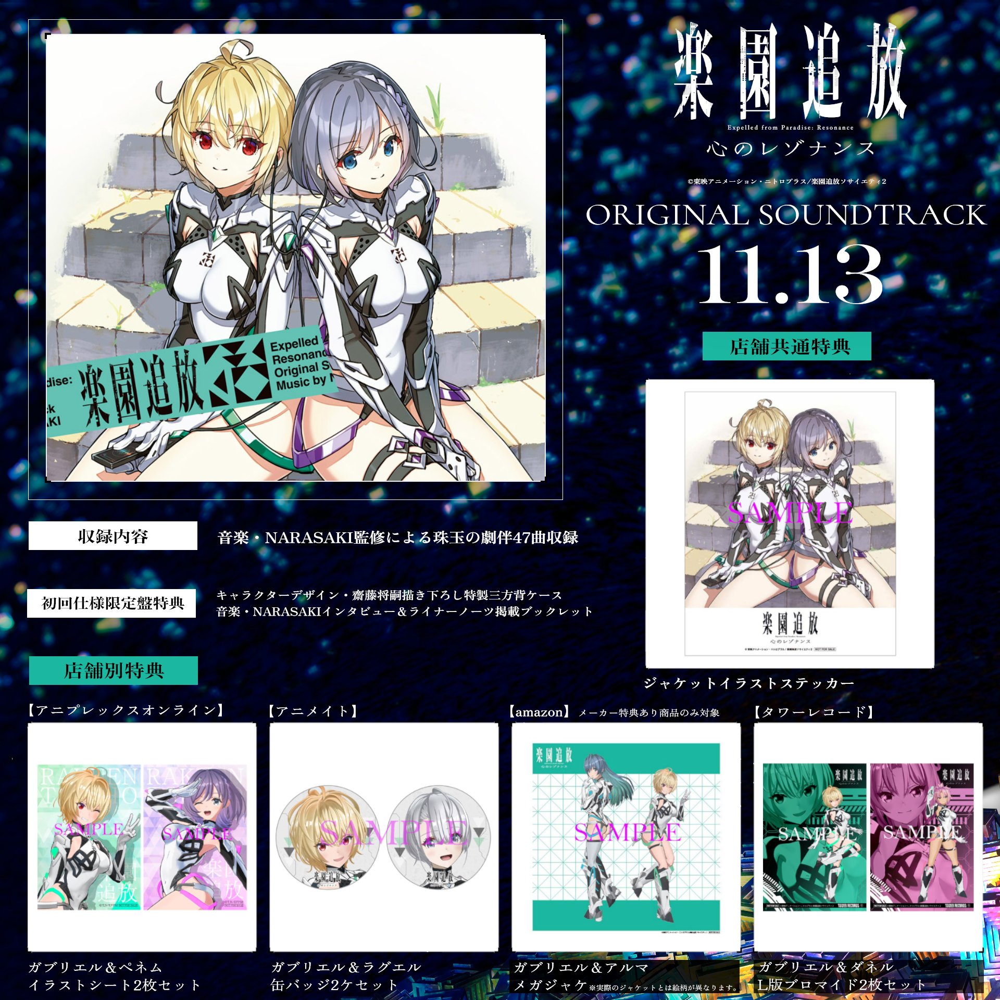
折りたたみスマホに「8万円引きです！」って言われたら、そりゃ考えるよね
折りたたみスマホに「8万円引きです！」って言われたら、そりゃ考えるよね | ギズモード・ジャパン
逆風続くユーロ、フランスで暴動 投機筋売り越しは10年ぶり大きさ
逆風続くユーロ、フランスで暴動 投機筋売り越しは10年ぶり大きさ
中国オフィスで広がる空室 外資撤退で上海は24％、世界主要都市で最高
中国オフィスで広がる空室 外資撤退で上海は24%、世界主要都市で最高
アーケードの名作『バーチャファイター3』が、PCに勝手移植!!
本作は、3Dグラフィックの最大6倍高解像度化に加え、ワイド画面・ウルトラワイド表示、最大120fpsの滑らかな描画を実現。
さらに表示 (元の投稿を開く)
住所公開望まない社長、1.6倍に増加 登記事項証明書で民間調べ
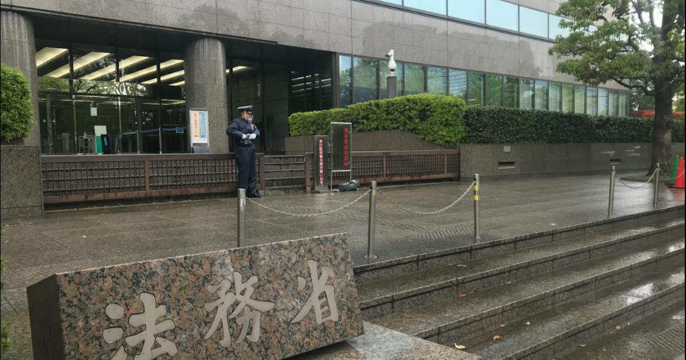
住所公開望まない社長、1.6倍に増加 登記事項証明書で民間調べ
ガルウイング軽トラ。実は巨大な走るクーラーボックス
ガルウイング軽トラ。実は巨大な走るクーラーボックス | ギズモード・ジャパン
フォートナイトのガンツコラボ…からのアニメ化とかみたい。
奥 浩哉
@hiroya_oku
GANTZリブートアニメ化してくんないかなぁ…
パピレス、電子書籍「Renta！」サービス停止 不正アクセスの恐れ
パピレス、電子書籍「Renta！」サービス停止 不正アクセスの恐れ
そういや最近 Worldcoin の通知きてないな…と思っていたらぶっ壊れてて横転
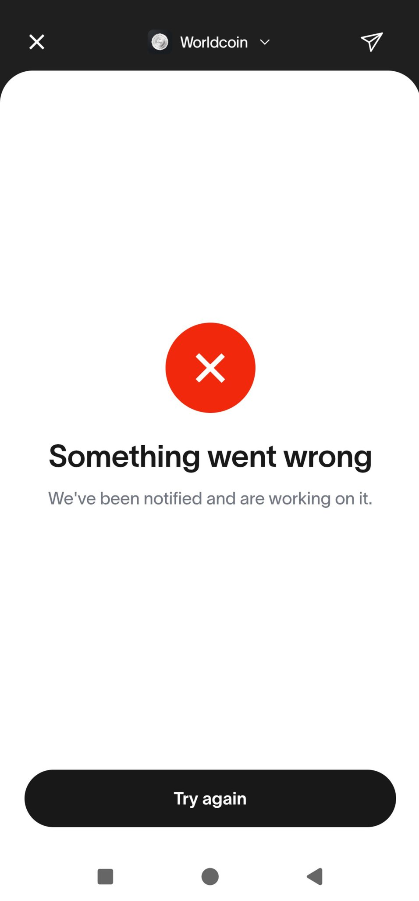
調べた限りCR3日間の時代も含め歴代で2番目の来場者数？
徳島新聞
@tokushimapress
｢マチ★アソビ｣閉幕、アニメキャラやコスプレに歓声 2日間で8万6千人来場
https://
topics.or.jp/articles/-/151
1600
…
#マチアソビ
『LoL』のK/DAが約6年ぶりの新曲「FIRESTARTER」を公開―MIYEONとSOYEONが続投、新メンバー2名が参加
https://
gamespark.jp/article/2026/1
0/19/173781.html?utm_source=twitter&utm_medium=social&utm_content=tweet
…
「バカは嫌い」発言で炎上した人気俳優さん、言ってしまうｗｗｗｗｗ #芸能・スポーツ
「バカは嫌い」発言で炎上した人気俳優さん、言ってしまうｗｗｗｗｗ - オレ的ゲーム速報@刃の記事ページ
jin115.com
OpenAIのSynthIDが付いているが、他に流れている動画を見れば本当に起こったことのようだ。おそらくAIで鮮明にしたのだろうけれど、ニュース画像はどんなに不鮮明でもAI加工してはいけないと思う
Visegrád 24
@visegrad24
今日のフランスでの大規模な暴動の写真。
これは暴力の旗です。
「Renta!」停止は「不正アクセスの可能性」のため 詳細は調査中、再開未定
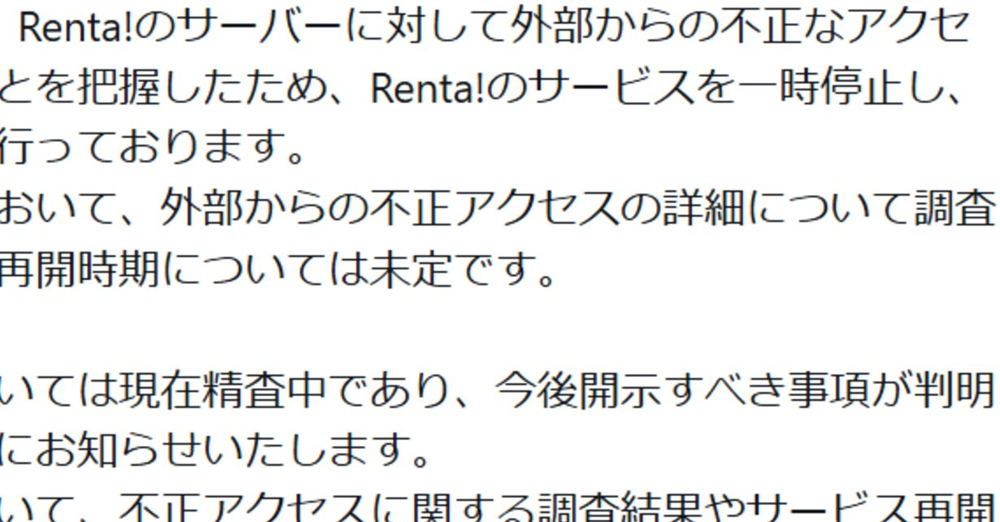
「Renta!」停止は「不正アクセスの可能性」のため 詳細は調査中、再開未定
ミルクの泡立て、もう自分でやらない。デロンギが43,200円引きで過去最安 BuyPR
ミルクの泡立て、もう自分でやらない。デロンギが43,200円引きで過去最安 | ギズモード・ジャパン
なんじゃこりゃ。3Dプリントで作ったダンジョン飯の「マンドレイクの甘露煮」がリアルすぎ
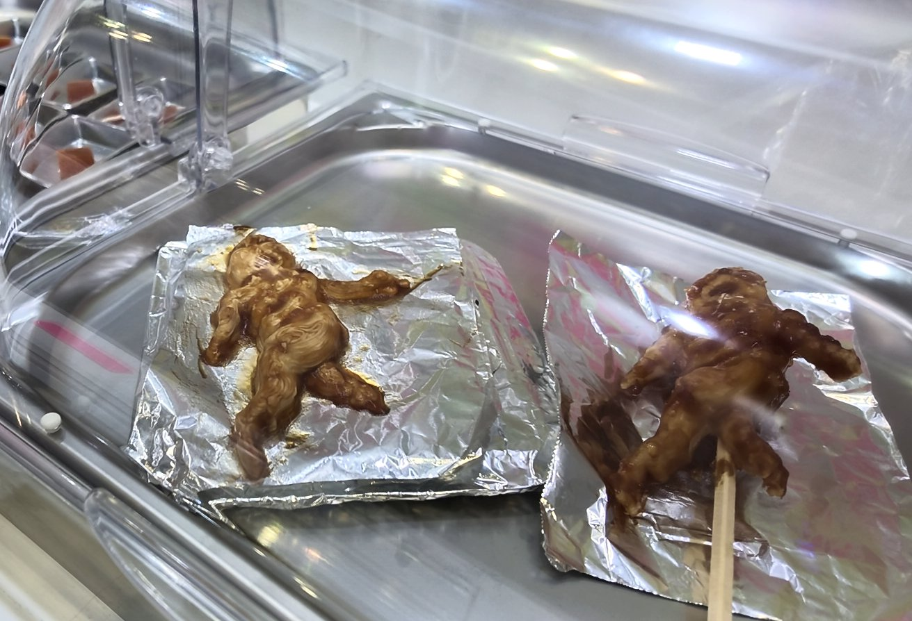
なんじゃこりゃ。3Dプリントで作ったダンジョン飯の「マンドレイクの甘露煮」がリアルすぎ | ギズモード・ジャパン
33%オフ。充電式で薄さ1.7mm、お財布の紛失対策はこれが最適解かも
33%オフ。充電式で薄さ1.7mm、お財布の紛失対策はこれが最適解かも | ギズモード・ジャパン
パランティアCEOの、「超AIを信じる人たちの間で喫煙が広がっている」という話は面白いな。
理由は「超AIが癌を解決するので、なんとかなるやろ」とうことらしいww
パランティアのCTO曰く「多くのAI研究者が、AIへの信仰の証として喫煙を始めている」 - YAMDAS現更新履歴
最初は1匹，やがて1000匹まとめて大漁。「海の魚、ぜんぶ釣る」体験版をSteamで本日配信
https://
4gamer.net/s/G103834.2610
19012
…
・釣って稼ぎ，スキルを強化して釣果をインフレさせる
・体験版は序盤を30〜40分ほどプレイ可能
・「ダイバー」や「爆発」などのスキル
この人気だし2027も出すつもりなのか…？
【超かぐや姫！】＠グッズ・イベント情報
@KaguyaHimegoods
『超かぐや姫！』クリスマスケーキ2026が発売決定！
プリロール限定描き起こしイラストや映画のワンシーンを使用した特別なケーキが登場！
ご予約はこちら▼
https://
anime-goods7.hatenablog.com/entry/2026/06/
18/121357
…
経済的な問題を完全に無視した上で誠意の無料ライブとすることで興行でなく観光扱いで入国するのは物理的には可能なんだろうか
デラゴシックが北朝鮮のプロパガンダに使われることあるんだ
https://
goodfreefonts.com/447/
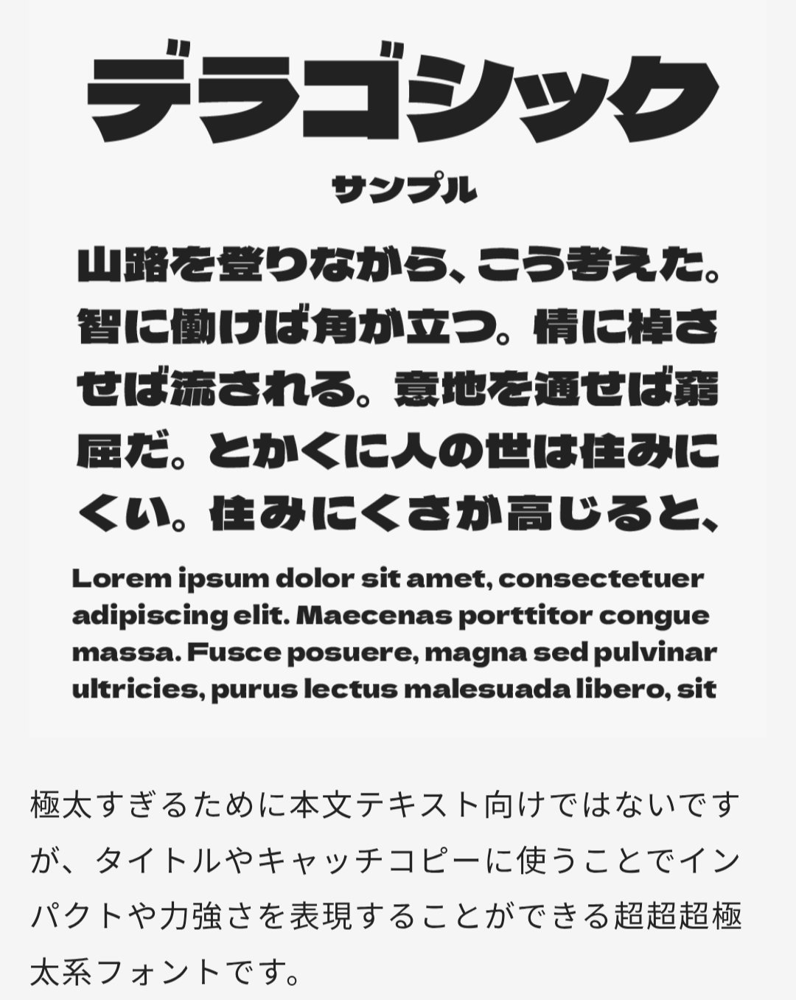
あす
@Aitakute_x2
北朝鮮のプロパガンダ、日本語で来られると結構おおって感じだな x.com/K_JINKEN/statu…
宿や交通確保済なのに目当てのイベントが直前中止、しばしばあるけどそれがロサンゼルスなのは厳しい
モスも漏洩したっぽいのマジか……
マクナルが漏洩したら終
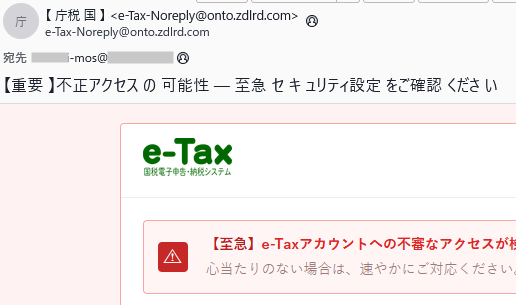
Shirouzu Hiroaki（白水啓章）
@shirouzu
今朝は、モスバーガー専用メールアドレス（今年作ったばかり）に、詐欺メールが届くなど…お漏らしキリがないなぁ。
インフル治ったはずなんだけど度々咳が出てしまう（痰はない）
GALLERIAの「FFXIV」公式対戦大会記念モデルPCにロジクールGのキーボードやマウスが付属するセットモデルが発売に
https://
4gamer.net/s/G002975.2610
19011
…
単品で購入すると合計で6万8000円を超えるキーボード，マウス，ヘッドセットが付属するお買い得なFFXIV推奨仕様ゲーミングPCだ
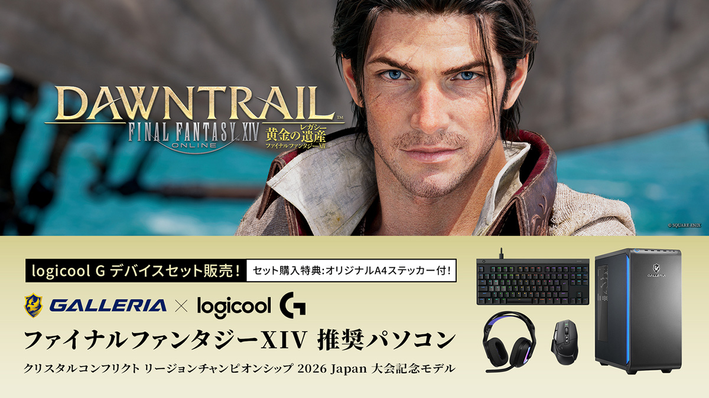
ちょうど2-4月あたりはホルムズ海峡とか世界情勢的にも暗いニュースしかなかったし、露悪冷笑が跋扈する中でひたすら明るいのが救いだったなあ
何度も周回してる人ほどノンストレス・ハートフルな明るい話を求めてるんだろうなとか
やっぱり帰ってきたAkihito(・o・)
@Akihi_X
#超かぐや姫 は「明るいSF」をやってくれたことに感謝してる。
やれAIが仕事を奪うだの、社会システムを乗っ取って破壊するだの言われてるときに、ディストピアものなんて観る気になれないし。
他社サービス流出情報用いた攻撃らしきものを確認―『FF14』スクウェア・エニックスが「不正アクセスとアカウント管理に関するご注意」を掲載
https://
gamespark.jp/article/2026/1
0/19/173780.html?utm_source=twitter&utm_medium=social&utm_content=tweet
…
数日でわかる。どちらが予想を当てたか…。
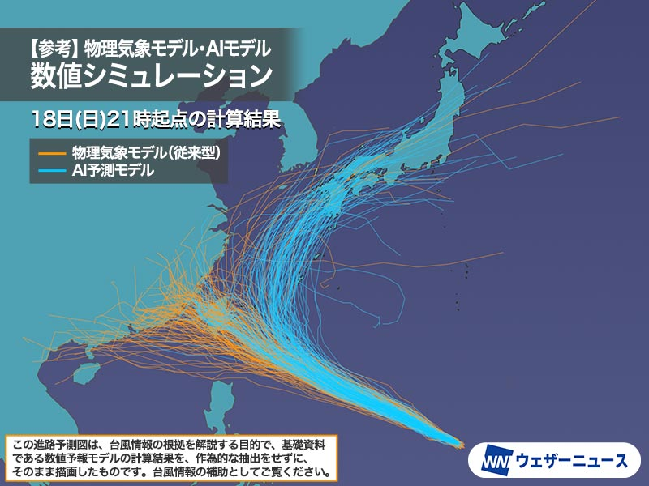
ウェザーニュース
@wni_jp
＜台風30号＞
大型で非常に強い台風30号(チャンパー)は、猛烈な勢力まで発達して沖縄の南に進む予想です。
沖縄の南に進んだ後の進路は、従来型の物理モデルとAI予測モデルで傾向に違いが見られます。今後の進路には大きな不確実性があるので最新の情報にご注意ください。
https://
weathernews.jp/news/202610/19
0101/
…
Runway Unlimited がなくなったらどうしようかなあ
GOの三浦さんのところに遊びにいってきました。
【公式】The Solutions-その手があったか！-
@the_solutions_5
The Solutions 10/19（月）19:00更新
ゲストはAIの第一人者・深津貴之(@fladdict )さんが登場！
「AIは部下ではなく上司」「出すより入れろ！」など、AIネイティブ時代に40代が生き延びる生存戦略をGO三浦とガチ議論！
テストプレイで既に「やすりがけに1時間使った」など中毒者続出。木工工房運営シム『Made by Hand』Steamストアページを公開、プレイテストも実施中
https://
gamespark.jp/article/2026/1
0/19/173779.html?utm_source=twitter&utm_medium=social&utm_content=tweet
…
木材を設計図どおりにミリ単位で加工、組み立ててオリジナルの家具を作って売る木工工房運営シミュレータ。
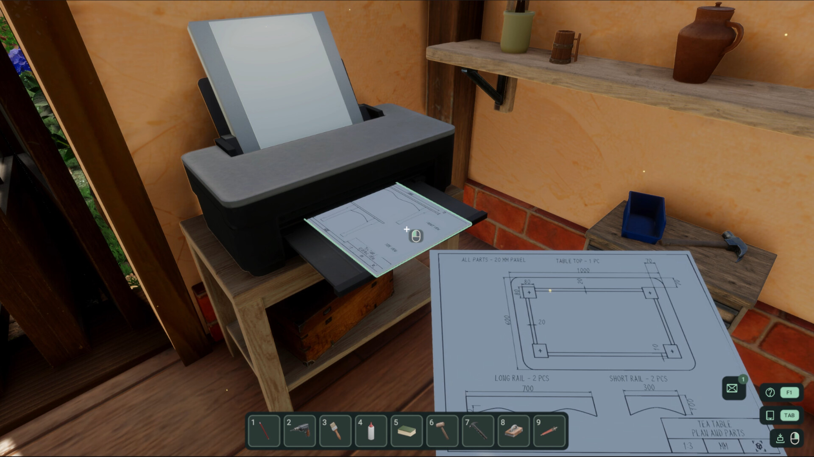
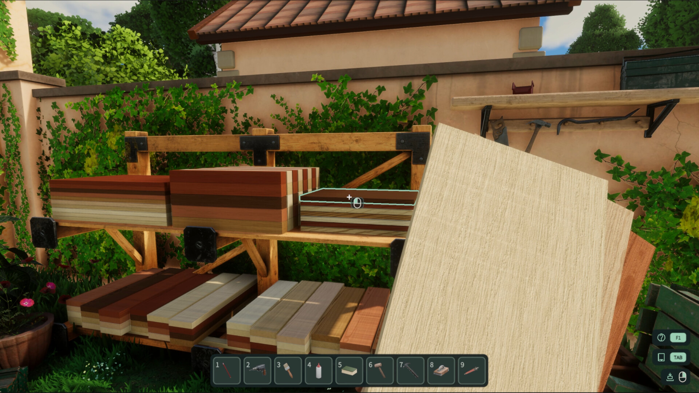
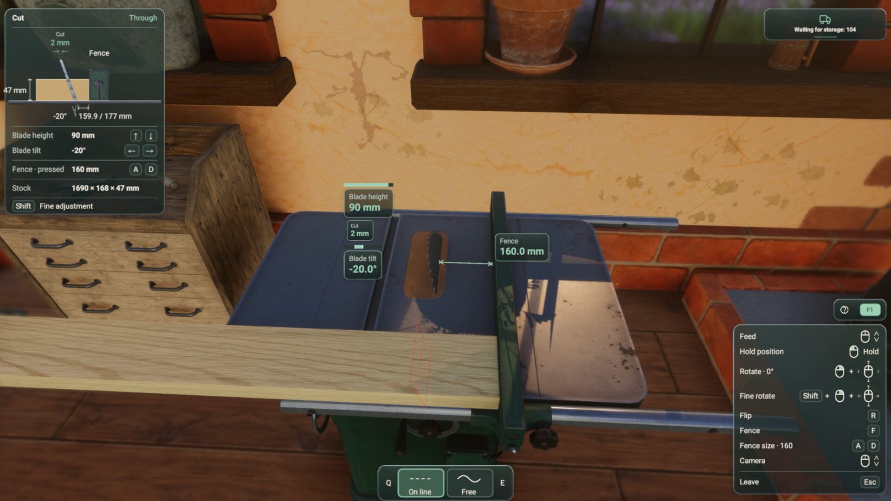
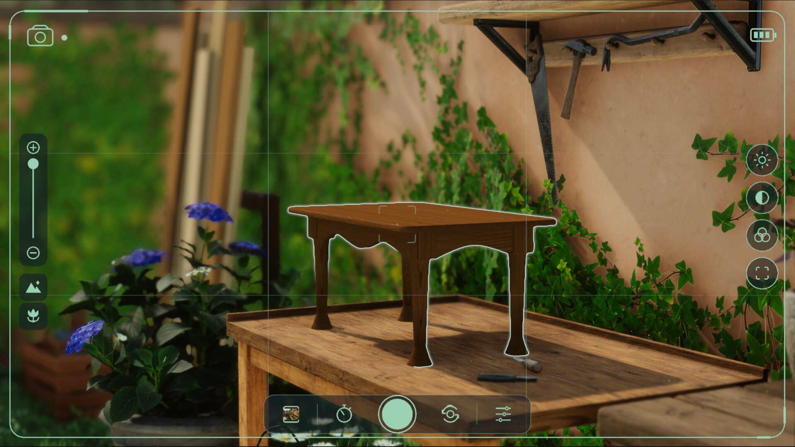
ユウマボウズさんがリポスト
＼出演情報／
NHK WORLD-JAPAN
「J-MELO」
#バンドリ よりAve Mujicaが出演します
＜放送日＞
11/1(日) 11:10～, 19:10～
11/2(月) 0:10～, 6:10～
期間限定でHPより視聴可能です
https://
www3.nhk.or.jp/nhkworld/en/sh
ows/j-melo/?type=tvEpisode&
…
お楽しみに
#J_MELO #AveMujica

瀬戸環奈さんに就活相談した結果
瀬戸環奈さんに就活相談した結果 : ハムスター速報
アライグマたちが“資金洗浄”を勘違いして，現金を丸洗い。ランドリー経営ゲーム「Money Laundering Raccoon」，2027年第3四半期に発売
https://
4gamer.net/s/G105112.2610
19007
…
怪しいお金を洗濯機でジャブジャブ洗浄。なお，彼らは自分たちが何をしているのか分かっていない模様だ
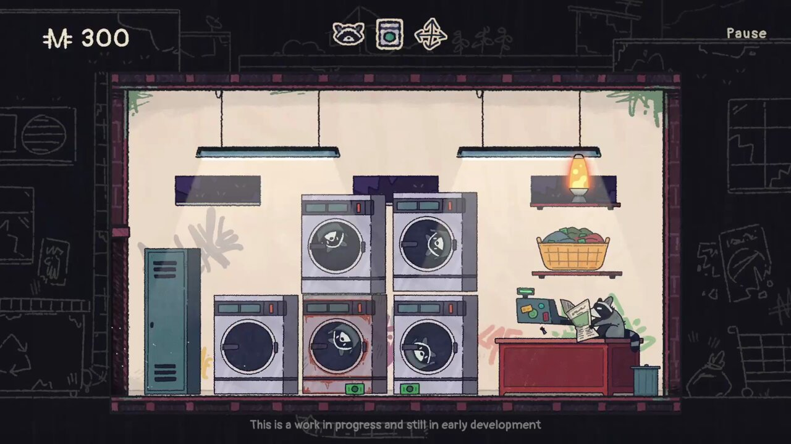
いろいろ心理的ハードルもあり診断受けてなく薬も試したことがないのだが（たぶん根っこが ASD 側で、ADHD 気味だが比較的軽度で注意欠陥要素がほぼないからかも）、コンサータ今在庫ないのか…致命的では？？？
mpyw （本物）
@realmpyw
インチュニブも合わない人多いって言われて試す気にならないねん 本当に終わってるわ 製薬会社マジなんとかして…
そういう含意が含まれているということは社会経験を積むにつれて理解はしているが、突然「ペン持ってる？」と聞かれてすぐに「これ貸そうか？」という反応は…返せないなあ…
私の場合は「持ってるけど…忘れてきたの？」が第一声になる気がする
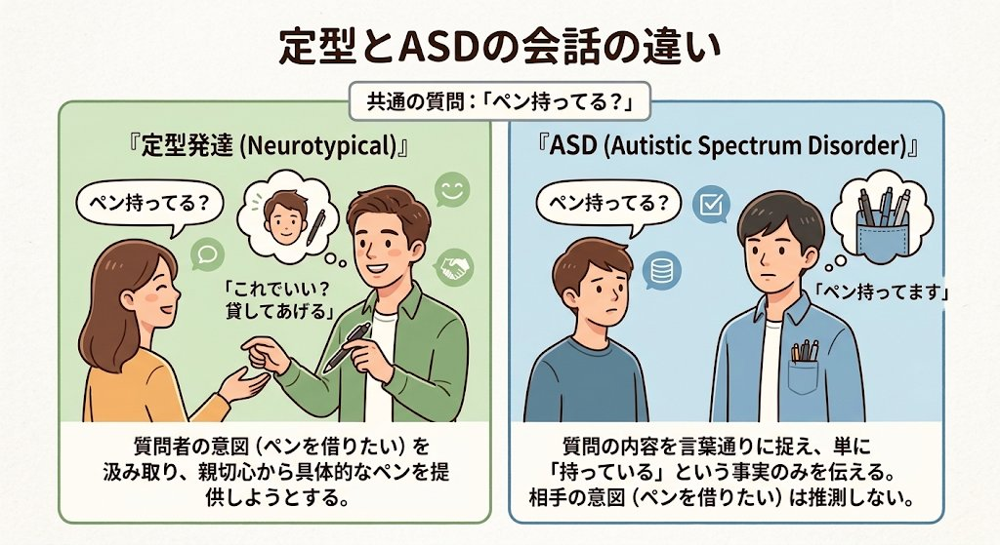
Lチキレッド@ドパガキ発達男の呟き
@asd_chicken1
ガチでこれ。ワイ結構これで怒られた。
英会話学習者、人間の先生「必要」8割超 生成AI利用者ほど高く
英会話学習者、人間の先生「必要」8割超 生成AI利用者ほど高く
11月6日、Macの歴史が変わる？ タッチ対応MacBookの発売日、最新予想
11月6日、Macの歴史が変わる？ タッチ対応MacBookの発売日、最新予想 | ギズモード・ジャパン
ガキの頃は鉄道に加え地図で絶海の無人島を探したり、Google マップの航空写真で高速道路のインターチェンジや JCT の構造を見たり、未成の高速道路を探したり、エレベーターのボタンのデザインの違いを探したり、エアコンの室外機のメーカーが気になったりしてたけど今考えたら全部アスペすぎるな…
㋐㋓㋥㋖
@aenk20251029
俺が見た児童がすきだったもの
車・鉄道 鉄板
エレベーターオタク・高速道路オタクなんかもいた
Torishima / INTPさんがリポスト
OpenCode漏洩の消費されたCodexモデルのクレジットは返金される上に、
OpenAIがOpenCodeを支援してセキュリティを守るみたいやな
どこの企業も漏らしたり間違って攻撃したり大変やな....w
Tibo
@thsottiaux
私たちのチームは、OpenCodeと協力して、彼らのユーザー（OpenAI APIの顧客でもある方々）が事業を再開できるよう支援し、攻撃で消費されたクレジットについては返金されるようにしました。
また、防御のために私たちのサイバー許可設定を使用するためのDaybreak
牛・豚の内臓から化粧品や薬を
https://
nikkei.com/article/DGXZQO
UA258I10V20C26A9000000/?n_cid=SNSTW005&n_tw=1792381111
…
開発の実証事業に農水省が補助金を出します。内臓に含まれるコラーゲンのほかにも、食用にならない部位に転用できる成分があると想定。食肉処理・加工企業の収益力向上につなげます。
牛や豚の内臓から化粧品や薬 農水省が開発の実証事業を支援
『GTA6』発売までついにあと1か月、遊ぶまで死ねない！ファンが「11月19日まで生きのびる方法」10か条を公開―「夜遊びはやめて寝よう」
https://
gamespark.jp/article/2026/1
0/19/173778.html?utm_source=twitter&utm_medium=social&utm_content=tweet
…
ジャンプフェスタ2027に「封神演義 逆命承天」の試遊台が登場
https://
4gamer.net/s/G104118.2610
19010
…
・東京ゲームショウ2026に出展された「呪術廻戦 RUMBLE: SURVIVATON」のプレイテスト版も用意
・「マンガボドゲ」の物販コーナーも設置予定。「ゴールデンカムイ ヒグマのスープ」を先行販売する
落書きでこれくらい描ける画力がほしい………
Torishima / INTPさんがリポスト
私たちのチームは、OpenCodeと協力して、彼らのユーザー（OpenAI APIの顧客でもある方々）が事業を再開できるよう支援し、攻撃で消費されたクレジットについては返金されるようにしました。
また、防御のために私たちのサイバー許可設定を使用するためのDaybreak
さらに表示 (元の投稿を開く)
これわかる……アイデアと根気とガッツさえあれば割とソフトウェア課題はなんでもできるようになってきているのだが
まるぃも
@marulimoai
魔法の杖を持たされて「ほら！使ってみろよ！」って言われても魔法が出せる人と出せない人が存在することが認知された世界。「魔法があればなあ」って決意マンできなくなった世界
Joshinまで…？？？？
個人情報漏洩ニュース見るたびに INMU KING のサビが脳内再生されて終わり
ITmedia NEWS
@itmedia_news
家電量販のJoshin、不正アクセスで一部サービス停止 個人情報漏えい「可能性否定できず」
https://
itmedia.co.jp/news/article/2
610/19/2000002369/
…
中国DeepSeekが低料金の新AIモデル ハイテク株安に影響か
中国DeepSeekが低料金の新AIモデル ハイテク株安に影響か
今日はこちらに出社です
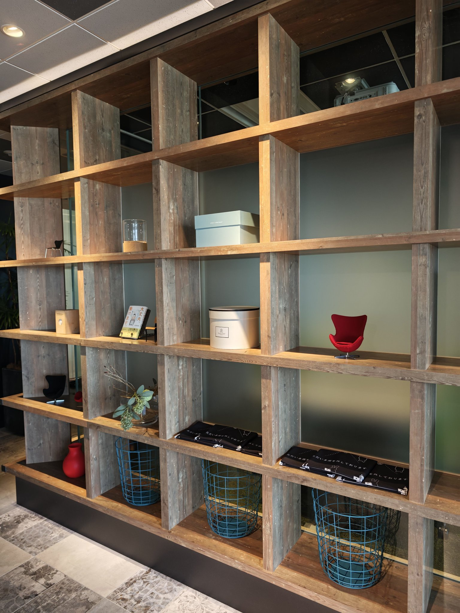
日本人の異常性、白人様がたった1本の動画にまとめてしまう→訪日外国人から共感殺到で8万いいね超えにｗｗｗｗｗｗ #雑談・その他の話
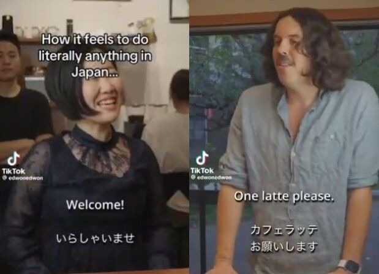
日本人の異常性、白人様がたった1本の動画にまとめてしまう→訪日外国人から共感殺到で8万いいね超えにｗｗｗｗｗｗ - オレ的ゲーム速報@刃の記事ページ
jin115.com
ガムテープ文字「修悦体」、始まりは駅の警備員の独断
https://
nikkei.com/article/DGXZQO
UD099Y00Z01C26A0000000/?n_cid=SNSTW005&n_tw=1792364815
…
JR新宿駅の改装工事中、利用客から頻繁に道を尋ねられたため勝手に案内板を作成。デザインは素人だった作者でしたが、特徴的な字形が話題となり、映画の題字にも採用されました。
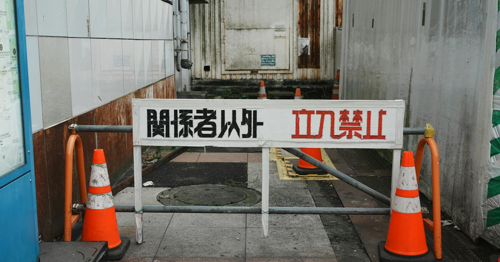
ガムテープ文字「修悦体」 警備員が勝手に作成、目を引く字体の駅案内
Torishima / INTPさんがリポスト
機械が好き、という特性の背景にあるのは、「いつ見ても見た目や動きが一定である」みたいなところにあるのかなあ
娘がASDグレーで、確かに機械や乗り物には興味がないのですが、幼児期のお人形遊びはいつも決まった型(配置や会話など)があり、その再現に強いこだわりがありましたね
㋐㋓㋥㋖
@aenk20251029
正直自閉症の児童とか多く見てきたが、
男子＝ほぼ例外なく何らかの機械が好き 車・鉄道等
女子＝↑みたいなのを見たことがない。
なので自閉症でもASDでも女子は男みたいに我が道を行くことが許されないんやろうな。擬態を強いられるというか。
#ASD x.com/sorasora9900/s…
アルゼンチンの映像作家が手掛ける「Tenebris Somnia」がリリース。レトロ調の2Dピクセルアートと本格実写映像を組み合わせたサバイバルホラーADV
https://
4gamer.net/s/G101061.2610
19009
…
・アルゼンチンの映画クルーによる実写映像を収録
・パズルとクリーチャー戦で物語の真相を追う
・約4年の開発を経て発売
ダンテ「神曲」の結末後を描くデッキ構築型ローグライト「Hell Maiden」，新たな辺獄の詩人「ルカヌス」を発表。新ステージ「第3圏 大食」の詳細も明らかに
https://
4gamer.net/s/G102061.2610
19008
…
第3圏には新たな敵が7種類登場し，プレイヤーを追いかけてくる罠も実装される。今年後半の配信を予定している
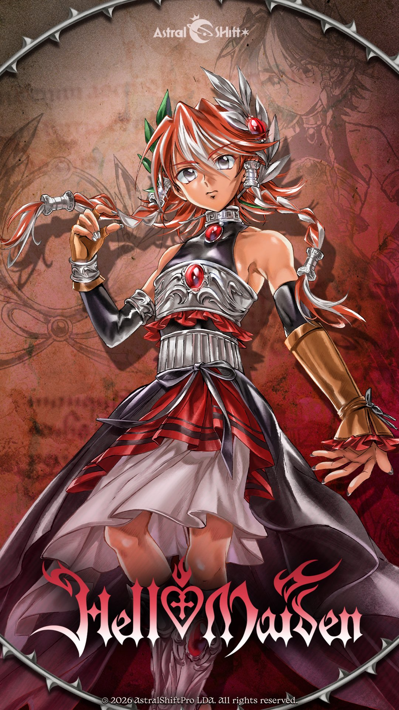
ちいかわ世界は、いわゆる闘争や解放運動や体制への疑義も、愛国もしない。逆に、勤労、キャリアアップ、仲間、助け合いみたいな感じで、仲間や友達のためならルールや社会正義からちょっとはみ出ることも否定しない…ぐらいの、マイルドな地方社会の保守から共同体の抑圧を削ったような感じのイメージ
DiorやHERMESやルーブルが危険に晒されてぇ…→何が困るの？
湘南ペンギンさんがリポスト
さすがにいちオタクとしての離陸決心速度を超えているので（なんなら同行のオタク既に現地いるので）
・どうなろうとLAにはたぶん行く
・無事開催できたらハッピー
・ポシャったらアメリカのオタクたちとピーコックシアター前で涙の残念会
ヨシ！！！！！！！！！（何一つヨシではない）
シーモアに続きRenta!もですか。マンガが読めなくなる
piyokango
@piyokango
[PDF] 当社が運営する電子書籍販売サイト「Renta！」の サービス一時停止に関するお知らせ
2026年10月19日
株式会社パピレス
https://
ssl4.eir-parts.net/doc/3641/tdnet
/2896506/00.pdf
…
#incident
「ちいかわ」世界は、「社会構造に疑問を持たず、過酷な世界で、仕事に励み、仲間と小さな喜びをみつけて生きる」という、超体制的に都合がよい社会というか、スーパーマイルド保守な世界観だけど、それが党派性問わず共感を呼ぶというのが興味深い
Torishima / INTPさんがリポスト
緊急メンテナンスについてのお詫びとお知らせ
平素よりRenta!をご利用いただき、誠にありがとうございます。
緊急メンテナンス実施に伴い、会員の皆様及び関係者の皆様には多大なるご不便とご迷惑をおかけしておりますこと、深くお詫び申し上げます。
2026年10
さらに表示 (元の投稿を開く)
iPhone Duo、今から予約しても届くの来年です
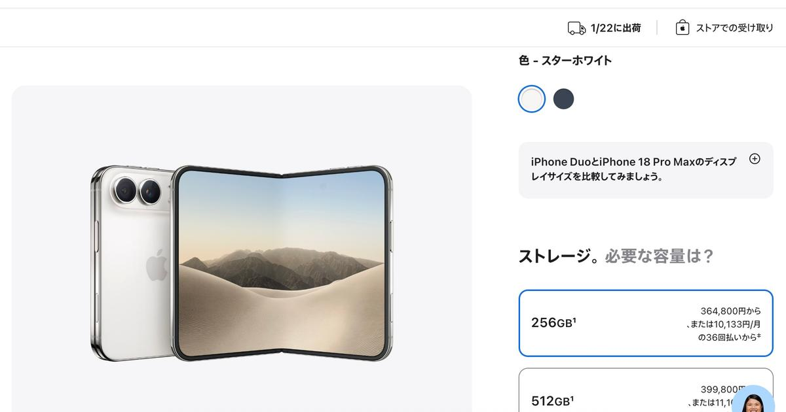
iPhone Duo、今から予約しても届くの来年です | ギズモード・ジャパン
ナイスチョコちゃん
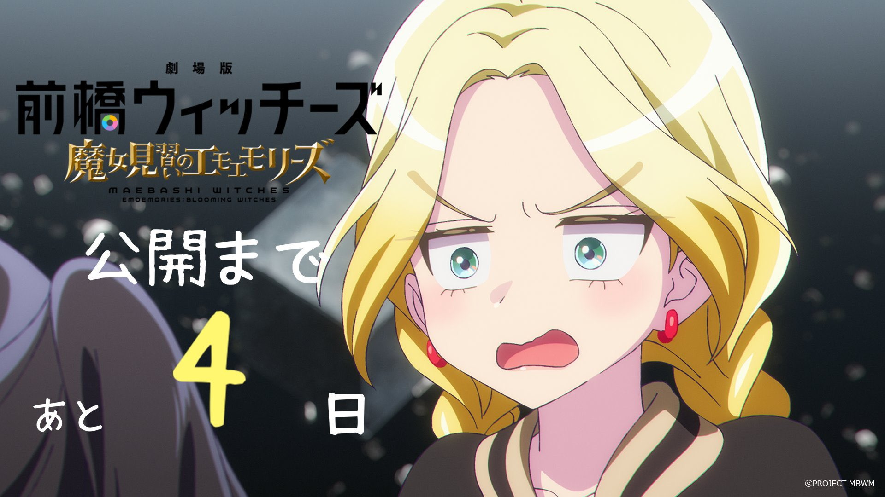
「Terminus: Day Zero」，11月18日にSteamで無料配信
https://
4gamer.net/s/G105111.2610
19006
…
・「Terminus: Zombie Survivors」の世界を舞台とする短編ゾンビサバイバルアドベンチャー
・デイジーという少女が「感染が始まった最初の日」を過ごす
・プレイ時間は1時間程度
地味に実際にエージェントを組み込む場合検索コスト高すぎね？と思ってたので普通にありがたいな…
Kenn Ejima
@kenn
DeepSeek-V4.1-Flash-1017 の発表でデカいのはこれ
ウェブ検索の価格破壊
Exa, GPT, Claudeなど主流と比べて約1/10の価格
しかも検索結果のページ本文取得も込み
どのLLMと組み合わせるかは自由で
ClaudeやCodexから呼び出す使い方でもOK
なのでExaやFirecrawlが直接競合になる
乱戦ですな… x.com/deepseek_ai/st…
ソースネクスト、パスワードなぜ平文で流出 「暗号化していたが、鍵にアクセスできるシステムに侵入された」
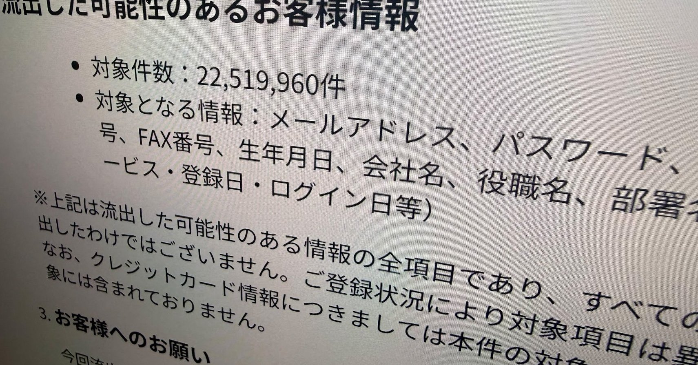
ソースネクスト、パスワードなぜ平文で流出 「暗号化していたが、鍵にアクセスできるシステムに侵入された」
スクレイピング対策徹底してんなあ、そんなに閉じたSNSになってしまったのか
ふぁ
@faa0311
Twitter、非ログイン時はAPIを一切叩けず、静的HTMLが降ってくるようになってしまった
ので、サブ垢の認証情報をsopsで暗号化してCIに利用するようにしてみた
ツクツクボウシが劣勢で
クマゼミが鳴いている。。
気温２９度
輿水畏子さんがリポスト
シェリ・ハンナ
この車に乗って女性をナンパとかしたら成功率がどれくらいなのか確かめたい。
湘南ペンギンさんがリポスト
さすがにもう飛行機も宿もキャンセルできんで〜〜！？！！？！？盛り上がってきた いや笑い事ではないが
Torishima / INTPさんがリポスト
Linuxカーネルの深刻な脆弱性「PwnEscape」（CVE-2026-99999）、ゲストの仮想マシンからホスト側Linux OSに不正なコードを実行できる可能性
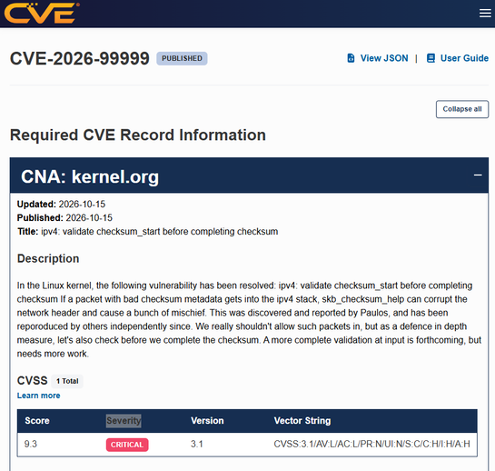
Linuxカーネルの深刻な脆弱性「PwnEscape」（CVE-2026-99999）、ゲストの仮想マシンからホスト側Linux OSに不正なコードを実行できる可能性
Torishima / INTPさんがリポスト
しかもOpenCode Consoleのユーザーの1.4%なんでOpenCodeだけ使ってる人なんも関係ないです。だからTorishimaさんの最初のポストは誤解招きそうだなーと。
ちいかわ、中国の論評も、アメリカの論評も「労働者としての共感」みたいな感じを聞き、グローバル全体でここが空白なのかもしれん。CEOとかヒーローとかインフルエンサーとかでない主人公。
現代ビジネス
@gendai_biz
ちいかわ「米国で売れすぎて売り場が空っぽ」……アメリカ人がハマるまっとうな理由
https://
gendai.media/articles/-/171
844
… #現代ビジネス
Torishima / INTPさんがリポスト
OpenCode ConsoleはOpenCodeのオプションサービス。
OpenCodeアプリとは別のクラウドサービスです。
その中のワークスペースという機能でapiキーを登録して複数人で共通して利用できるんですが、そのapiキーが漏洩したという話ですね。
公式ドキュメント:
https://
opencode.ai/v2/docs/consol
e/
…
#めざめざ
ご視聴ありがとうございました！
次回もどうぞお楽しみに
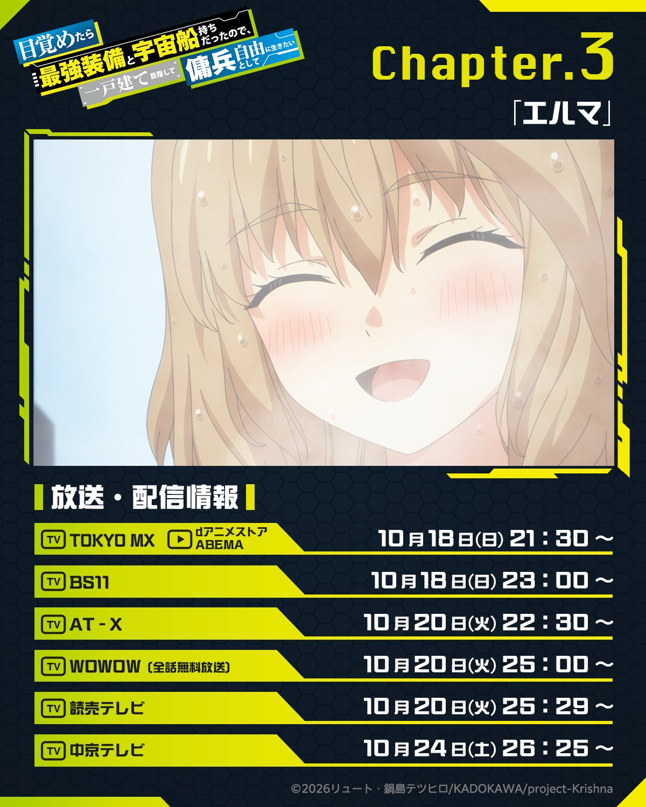
『目覚めたら最強装備と宇宙船持ちだったので、一戸建て目指して傭兵として自由に生きたい』アニメ公式
@saikyosoubi
ご視聴ありがとうございました
BS11での放送は本日このあと23:00から
その他の放送・配信スケジュールは下記をご確認下さい
#めざめざ #最強装備
ポルナーとして補足しておくと、これは天野リリスの動画だと思います。
対抗して名村岩さんもお勧めを放出してください。
名村岩
@B7R_N24_E235
何故か俺のアイコンのエロ垢がいるんだけど、
本当になんで？ x.com/dmrctlga/statu…
Uber「マッハで来た」
久しぶりにウーバーイーツ注文→配達状況を見ると…… 目を疑う光景に「最近のUberはすごい」「チップあげなきゃね！」
https://
nlab.itmedia.co.jp/cont/articles/
4049745/
…
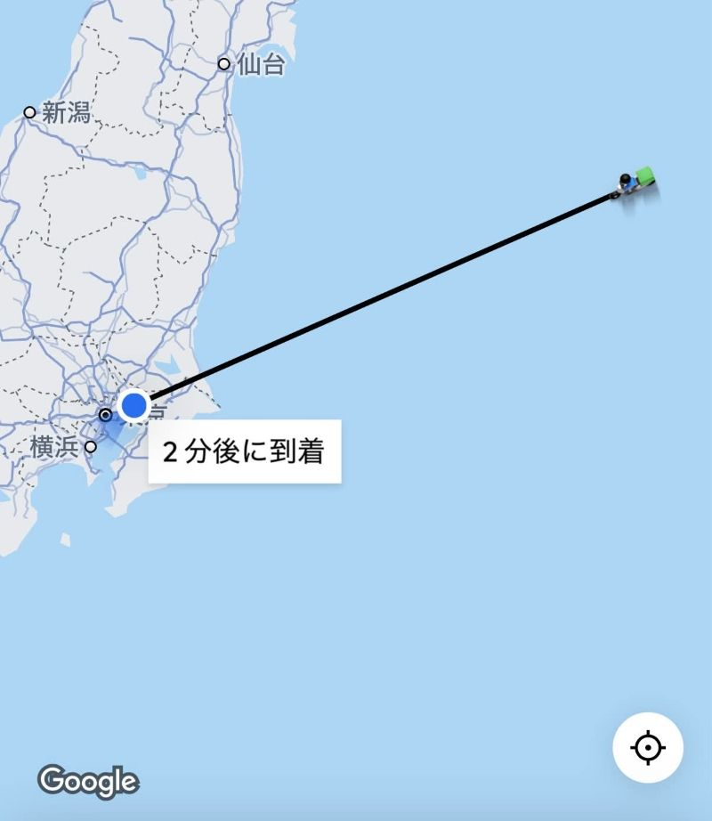
ギズモード・ジャパン（公式）さんがリポスト
【開催まであと18日！長野県初のAIテクノロジーイベント】
長野県主催「MeTA-Mirai（めたみらい）カンファレンス 2026」（11月6日金曜日、長野市・善光寺周辺エリア）の全プログラムが発表となりました！
さらに表示 (元の投稿を開く)
押井守氏に続き、長野県副知事・新田恭士氏が登壇決定！「MeTA-Mirai」全プログラム発表 ―11月6日開催・長野県初の大型AI・テクノロジーイベント「MeTA-Mirai（めたみらい）カンフ...
この垢つくるとき「現実の知り合い共、ほぼ既婚者になってたまに会うと僕の独身Twitter生活を一生バカにしてくるから絶対垢教えねぇ」と垢乗っ取られてTwitter辞めた設定で通してたのに「Iカップ声優のおっぱいすごかった？w」とLINEがきてこれ
「最古の酒」蜂蜜酒、日本で醸造広がる
https://
nikkei.com/article/DGXZQO
UF0926P0Z00C26A9000000/?n_cid=SNSTW005&n_tw=1792373239
…
「ハリー・ポッター」に登場し、かつて英女王エリザベスⅠ世も愛飲したとされます。「甘く酸もあり、ジャムのよう」と評され、日本酒の蔵元や大学も醸造に乗り出しました。
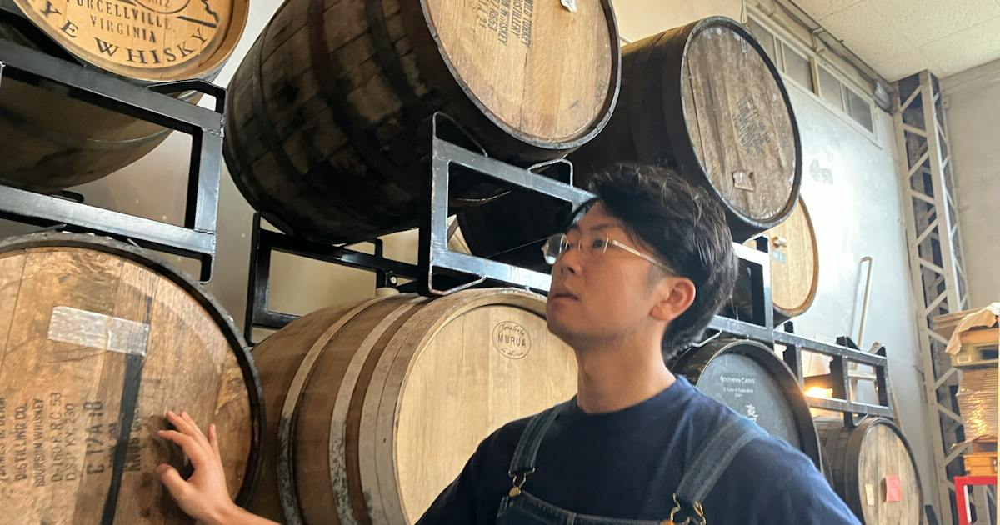
「世界最古」の蜂蜜酒造り、京都や滋賀で 蔵元と大学もマリアージュ
超過激サバイバルホラー『Outlast』シリーズ、スタジオのテスト参加者が泣いて逃げ出し戻らなかった過去も―開発元の共同創業者がこれまでの歩みを振り返る
https://
gamespark.jp/article/2026/1
0/19/173777.html?utm_source=twitter&utm_medium=social&utm_content=tweet
…
過激な表現について、共同創業者は「ホラーゲームを作っているんだから、当然グロテスクになるだろう」と言及。
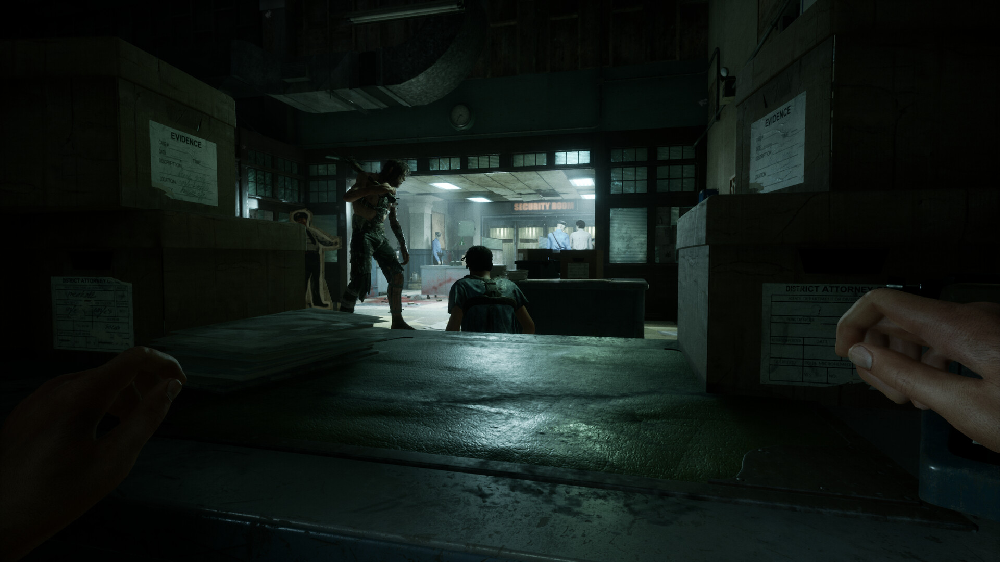
学園アイドルマスター／学マス【公式】さんがリポスト
✧┈┈┈┈┈┈┈┈ 𑁍 ┈┈┈┈┈┈┈┈┈✧
『Roar』
Official Music Video
10/20（火）22時 プレミア公開予定
✧┈┈┈┈┈┈┈┈ 𑁍 ┈┈┈┈┈┈┈┈┈✧
https://
youtu.be/Mdyk3h5-TQE
#学マス #ASOBINOTES
称号受け取ったらついに遥百景が終わってしまうと思ってしまい未だに受け取っていない
今井翔太 / Shota Imaiさんがリポスト
お久しぶりデーース！！
東京ドームの熱狂からはや2年あまり...お元気でしたカ？おかげさまで今回もお伺いできることが決まりまシタ！また光の戦士の皆サマとお会いできて嬉しいデース。
さらに表示 (元の投稿を開く)
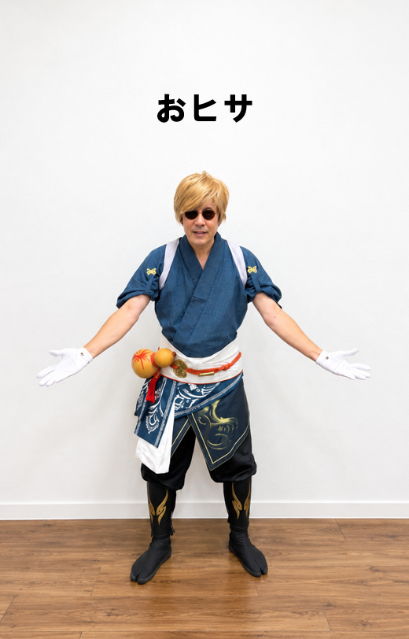
GigaCrysta-ギガクリスタ(公式)
@GigaCrysta_io
＼ファンフェスティバル 2026 in 東京にて展示いたします！／
当社は「クリスタルコンフリクト」公式決勝戦に機材協力いたします。また、ファイナルファンタジーXIV推奨モニター「GigaCrysta」展示コーナーも設置いたします。
ファンフェスティバルへご来場の際は、ぜひお立ち寄りください。
Torishima / INTPさんがリポスト
『思想おじさんはドパガキにはちょっとw w w w』
これは声に出して読みたい日本語だ．素晴らしい！
いろんな思想おじさんに言ってあげたい！
TMK２世
@TMK_2ndseason
思想おじさんのキメラみたいな文書おもろい x.com/ochyai/status/…
ルーデウスとかが無理なやつは正反対でも見ておけばいいだろ。人間の人間たる弱さ醜さを矯正すべき病理として扱い、非人間的な模範解答が繰り広げられているんだからさ。お行儀の良いアニメだけみてなさい。
「プリンセスコネクト！Re:Dive」，10月31日から開催される「ウマ娘 プリティーダービー」とのコラボの情報を公開
https://
4gamer.net/s/G038749.2610
19001
…
・ストーリーイベントに参加すると，ゴールドシップが仲間に
・コラボガチャには，アーモンドアイ，ラッキーライラック，デアリングタクトが登場
モナリザが燃え落ちようと人々の生活と人類の未来になんら影響しないという単純な事実があるのみである。
思うけどこの手のAIバトルは、AIでノーマル版と、超タメアリ版と高速版作って、プロがアフターエフェクトで切り貼りやタイミング調整… すると、すごく良くなりそうな気がするけど、誰か検証しないかな。
Kōda
@aimikoda
シーダンス 2.5 キネティック・ファイト・シーン
プロンプトはリプライに。
iPadから「REDMI Pad 2 Pro」に買い替えたら、動画もゲームもこれで十分だった
iPadから「REDMI Pad 2 Pro」に買い替えたら、動画もゲームもこれで十分だった | ギズモード・ジャパン
ロシアの日本人記者拘束、解放に「同盟国の協力重要」 16カ月収容された米紙記者
https://
nikkei.com/article/DGXZQO
CD172DC0X11C26A0000000/?n_cid=SNSTW005&n_tw=1792377215
…
「ロシアが日本から見返りを得るまで拘束は続く」との見方を示しました。現状では、日ロ両国の領事条約で定められた領事面会も認められていません。
ロシアの日本人記者拘束、解放に「同盟国の協力重要」 経験した米記者
高市首相、減税の財源「国債発行否定せず」 予算全体で適切に管理

高市首相、減税の財源「国債発行否定せず」 予算全体で適切に管理
「パズルの傑作。自分が途方もなく愚かで、そして驚くほど賢くなったように感じさせてくれる」海外レビューハイスコア『Order of the Sinking Star』
https://
gamespark.jp/article/2026/1
0/19/173776.html?utm_source=twitter&utm_medium=social&utm_content=tweet
…
“風景パズル”の『The Witness』開発者が送る、狂気の極ボリューム最新作。
Torishima / INTPさんがリポスト
ちなみに、モスバーガーでしか使用していないメールアドレスにも、同じ内容の迷惑メール来てるんだけど、洩れた？
間違えた
クリワムやないかい！！
Torishima / INTPさんがリポスト
思想おじさんのキメラみたいな文書おもろい
落合陽一 Yoichi OCHIAI
@ochyai
私は唯物論者の計算機自然派ですが，岩盤保守層で神社の禰宜です．万国の計算機よ，団結せよ．
旧い左右の人新生の亡霊を，祓い去れ！ x.com/koheisaito0131…
「アズールプロミリア」，事前登録2500万人突破。ヒーラー「アニス」の全員配布が決定
https://
4gamer.net/s/G078489.2610
19005
…
・事前登録者数2500万人突破を記念したイラストを公開
・「アニス」は味方のHPを回復するサポートキャラクター
・3000万人達成で「無垢な痕跡」合計20枚を配布
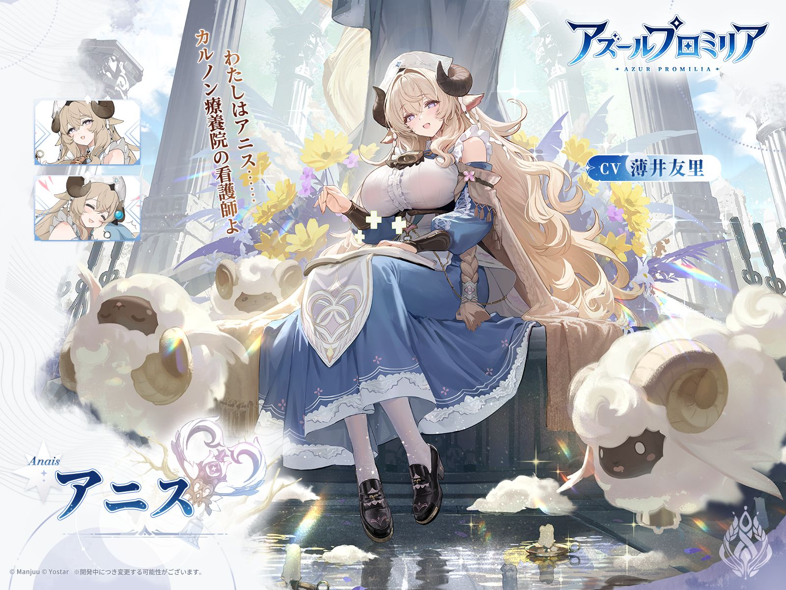
闇イーウィヤか～～～～～～～～～～
日経平均午前790円安、途切れぬコアウィーブ不安 内需株に光明
日経平均午前790円安、途切れぬコアウィーブ不安 内需株に光明
24/08/29
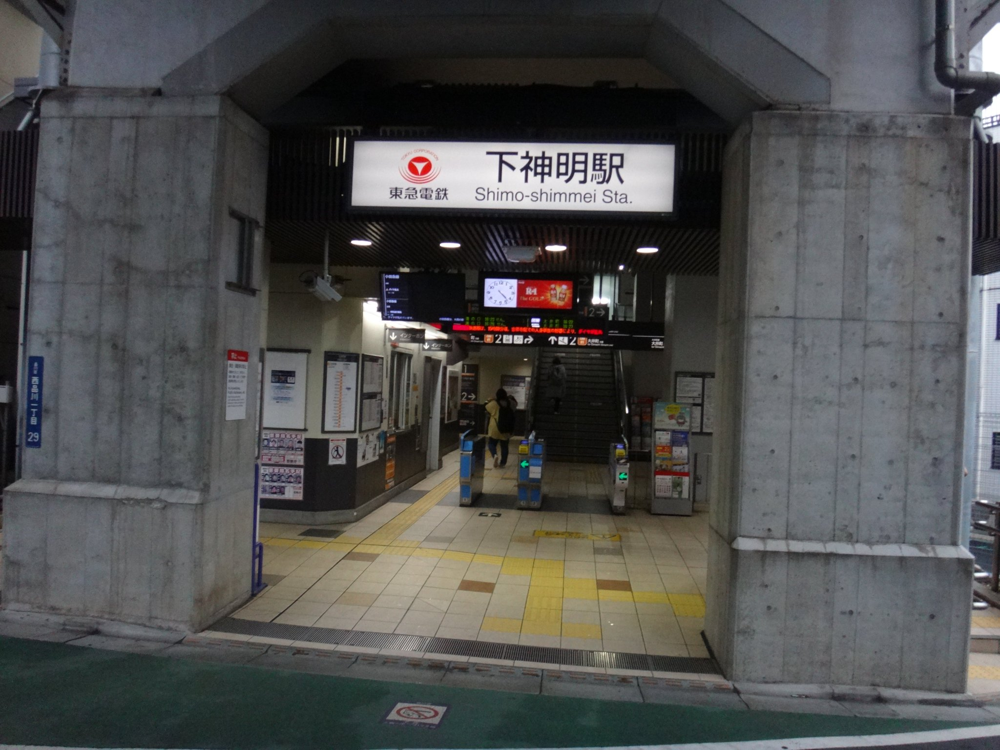
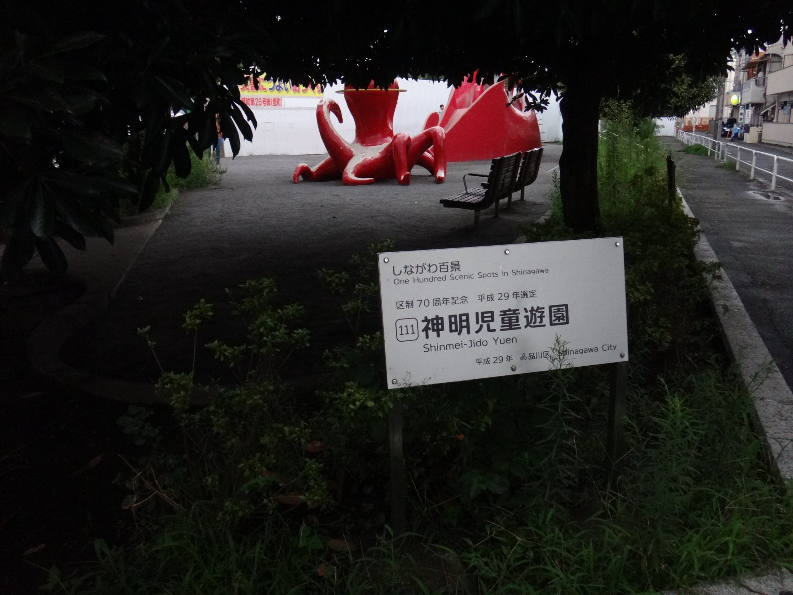
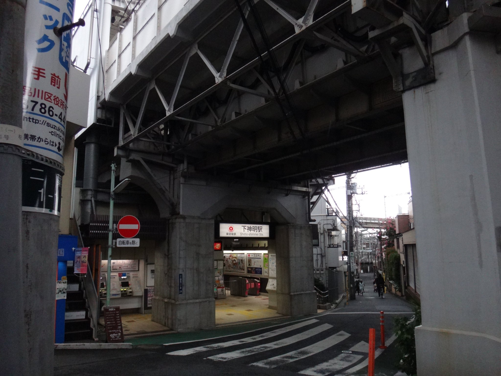
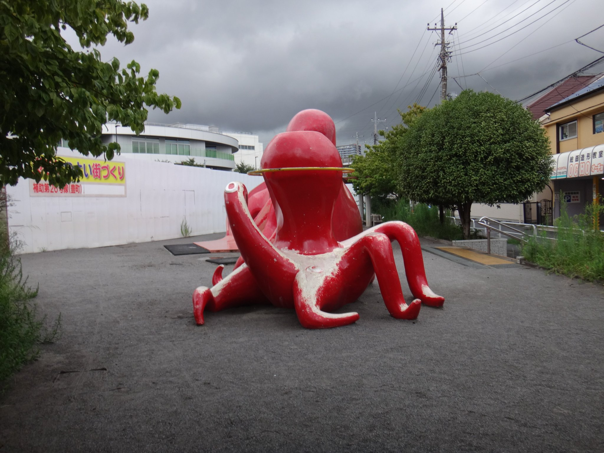
かつて大日本帝国は景福宮を覆い隠すかのように朝鮮総督府を置いたが、時代は変わり日本のオタク文化の正面玄関である秋葉原駅にYOSTAR改札が鎮座するようになった。
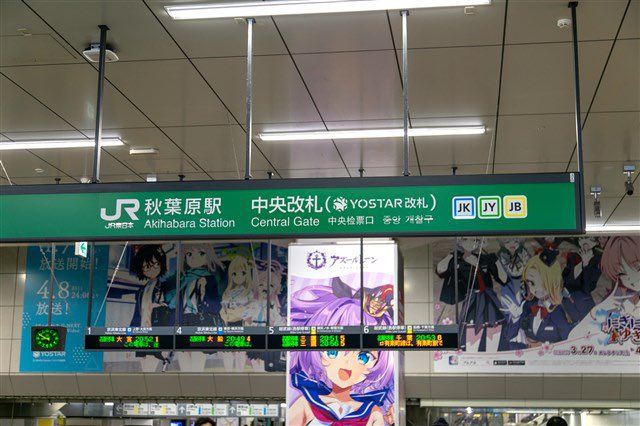
10月10日より開催中
「通算800曲リリース記念コインドロップUPキャンペーン！」
開催期間中にライブをすると、追加でコインが獲得できます
開催期間は10月31日(土)14:59までお見逃しなく
#バンドリ #ガルパ
【画像】アイドル「身長148cm体重132kg、AIではなくリアルにこの体型です」→普通の人にあるはずの“アレ”がなくて万バズ拡散ｗｗｗｗｗｗ #雑談・その他の話
【画像】アイドル「身長148cm体重132kg、AIではなくリアルにこの体型です」→普通の人にあるはずの“アレ”がなくて万バズ拡散ｗｗｗｗｗｗ - オレ的ゲーム速報@刃の記事ページ
jin115.com
10月10日より開催中
「通算800曲リリース記念楽曲ミッション！」
開催期間中にミッションをクリアすることで、「各バンドのスキル練習チケット」「裁縫セット」などをGETできますよ
開催期間は10月31日(土)14:59までぜひお見逃しなく
#バンドリ #ガルパ
／
まだ間に合います！
10日間ログインでSS1体確定！
＼
ハロウィン ログインボーナス開催中！
期間中10日間ログインで、2026年7月3日までにガチャで登場したSSスタイルから1体確定のガチャが引ける！
▼開催期間
10月16日11:00 〜 10月29日23:59まで
#ヘブバン
湘南ペンギンさんがリポスト
現地時間の2026年10月22日(木)、23日(金)に開催を予定しておりました『ウマ娘 プリティーダービー 7th EVENT WORLD TOUR “THE STAGE” in LOS ANGELES』につきまして、現時点でビザの承認が下りておりません。
さらに表示 (元の投稿を開く)
News｜ウマ娘 プリティーダービー 公式ポータルサイト｜Cygames
990円で1キロ以上ある……ってコト！？
丸亀製麺で“990円のうどん”を頼んだら…… 「食べる人いるの!?」衝撃の光景が228万表示「昨日行った時に勧められたけど……」
https://
nlab.itmedia.co.jp/cont/articles/
4033031/
…
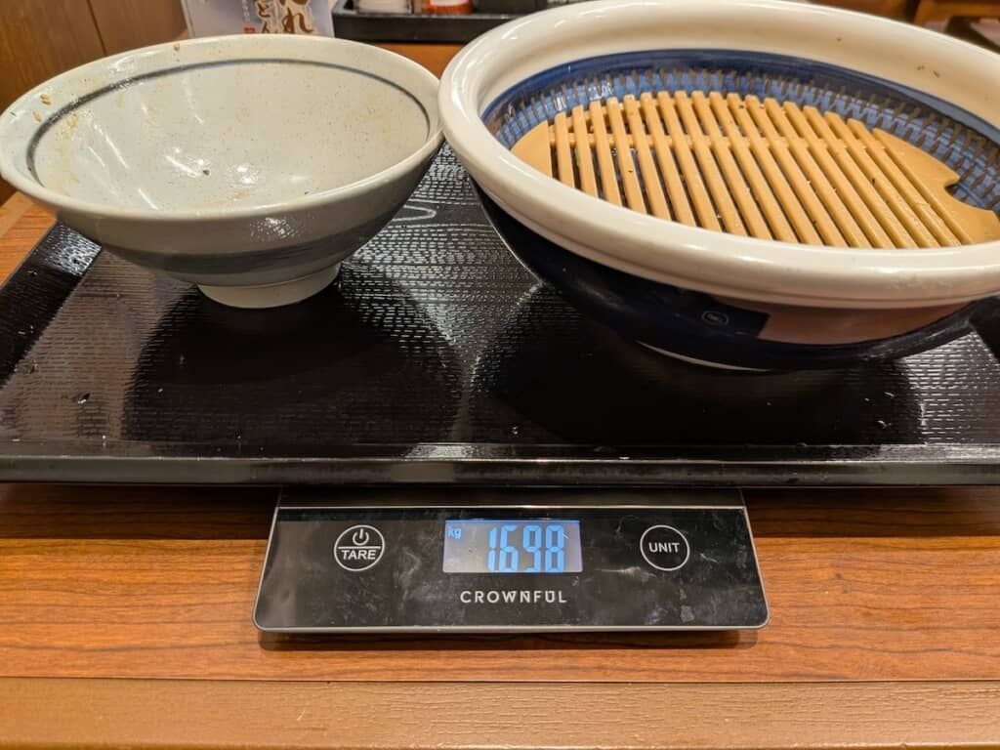
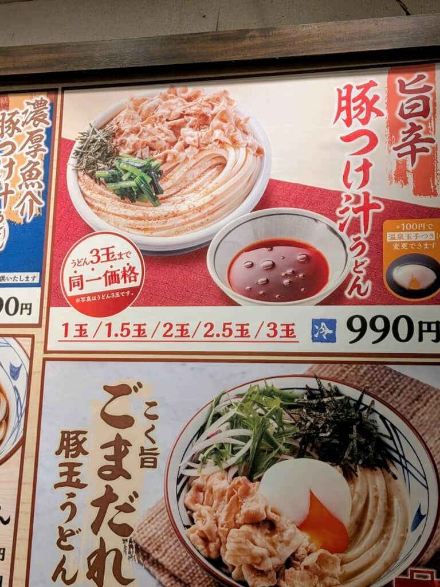
社宅・社員寮、家賃高騰で脚光
https://
nikkei.com/article/DGXZQO
UC098BN0Z00C26A9000000/?n_cid=SNSTW005&n_tw=1792362644
…
単身者向けを中心に、若手人材の採用・定着につなげようと企業が拡充を進めています。
リログループが管理する社宅の戸数は3年間で25%増加。伊藤忠商事は一度手放した社員寮を復活させました。

家賃高騰で社宅に脚光、若手定着へ企業支援厚く 管理戸数25%増
人が決めたティア表を予想するパーティゲーム『みんなでティア表!』11月12日Steamリリース決定！出題者が決めたものが絶対、しかし人の理解を得られるとは限らない
https://
gamespark.jp/article/2026/1
0/19/173775.html?utm_source=twitter&utm_medium=social&utm_content=tweet
…
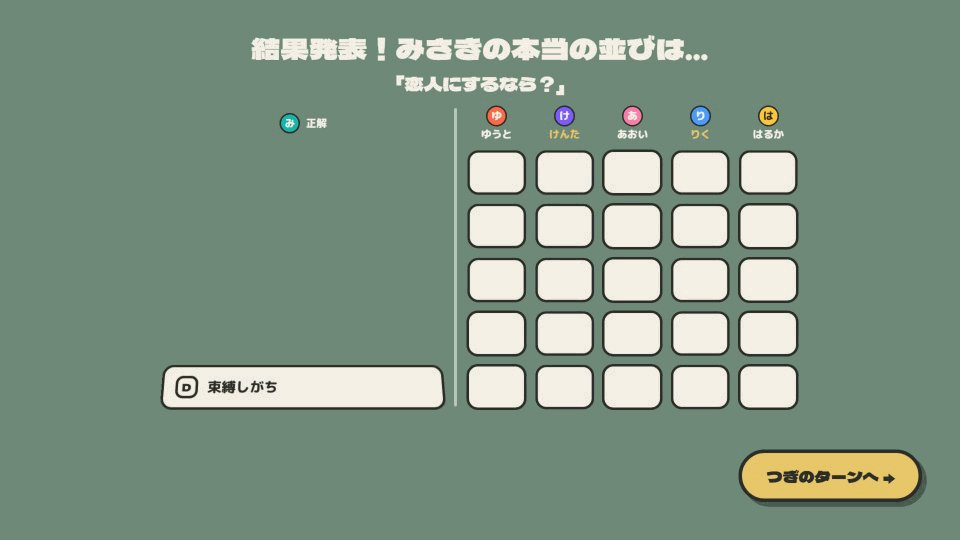
本格クライムサスペンス恋愛ADV「アストライアの罪咎」，2027年3月25日に発売決定
https://
4gamer.net/s/G094998.2610
16042
…
・女性向けゲームブランド「MintLip+」の完全新規タイトル第1弾
・2025年10月にプロジェクト「Astraea」として発表されていた作品
・メインキャラクターや製品情報なども公開
今日から千奈
アナザーアイドルアップデート記念！
SSR アナザーアイドル 確定ガシャ
【倉本千奈】のシーズン限定「アナザーアイドル」が
いずれか確定で手に入る無料1連ガシャ！
ガシャ開催時期：10/21(水) 10:59まで（予定）
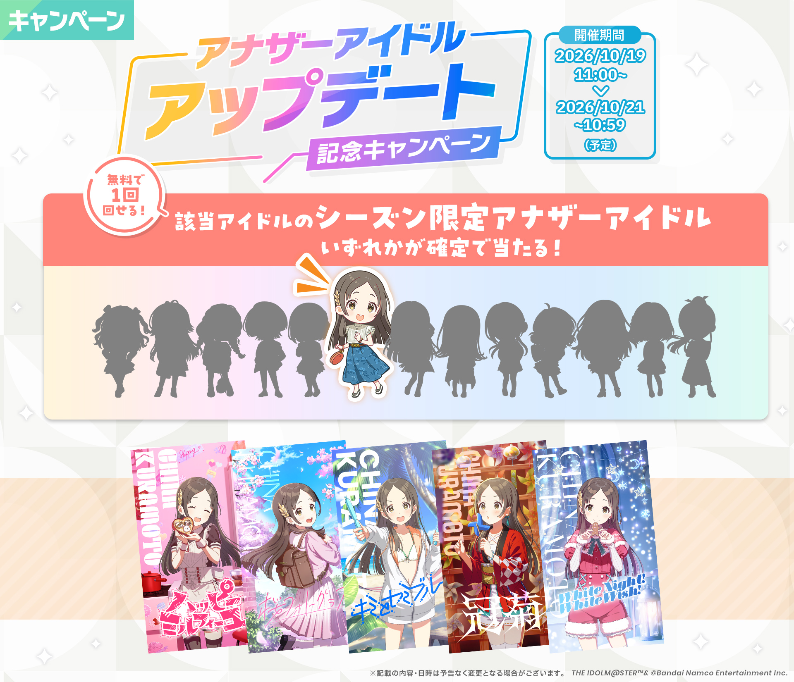
ポン☆潤々さんがリポスト
／
クイズに答えてくれないと
イタズラしちゃうやん…！
＼
3空港公式LINEでクイズに正解したら、
ハロウィン限定のスマホ壁紙をプレゼントするやん～
↓今すぐチェックやん！
https://
liff.line.me/2005718375-raB
ZRAN5?st=o5CIqQj_SjCaO1GKMn0gMQ&lfm=v742dkVtQO6Y3SV4fXIhHg&type=channel
…
【10/22(木) 『P丸様。』コラボイベント開始！】
ぴよっこさん必見！『P丸様。』のコラボイベントが決定！
10/22(木)より、「P-KATSU」「天天天国地獄国 (feat. ななひら & P丸様。)」が登場！
イベントでは「P丸様。」のキャラクターやネームプレート、ステージ背景がゲットできます！
さらに表示 (元の投稿を開く)
10月10日より開催中
「通算800曲リリース記念ログインキャンペーン！」
開催期間中に1度でもログインし、11月6日(金)3:59までに合計7日間ログインすることで、最大「スター2600個」がもらえますよ
開催期間は10月31日(土)3:59までログインをお忘れなく
#バンドリ #ガルパ
GANTZのPvPのデスゲーム、今こそ出てほしい。
Torishima / INTPさんがリポスト
AI創作アンケート作りました！簡易的なものですが、なんとなく今の主要モデルとか界隈のボリュームゾーンが分かればいいな…
https://
studiomasakaki.com トップページ下の方で確認できます。
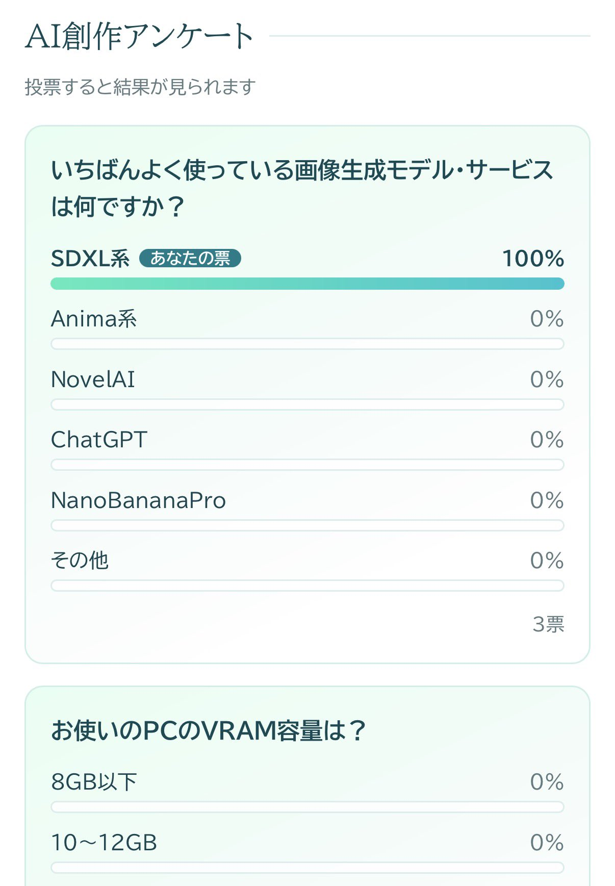
JAXA（というか日本）が真に宇宙政策でやるべきなのは、個別技術といより、（右が海という）日本の地勢的な構造を利用して、宇宙開発のアウトソースセンターを日本に作って、世界中の資本やお金が流れ込むようにすることであったのでは！？とは思う。
スターリンク基地局で放火未遂 リトアニア「ロシアの破壊工作」

スターリンク基地局で放火未遂 リトアニア「ロシアの破壊工作」
Torishima / INTPさんがリポスト
いや「国立研究開発法人」という枠のせいじゃないかなぁ。どんなに技術があっても、日本の宇宙開発は世界中から資本を集められる構造になってなかった。日本国のお小遣いの中でしか動けないからな気もする。
black（黔騎士)
@blackright0
「なんでJAXAはSpaceXに負けてるんだ」と言われると、20年前の時点でメタンエンジンや再使用ロケットの要素技術を先に触っていたのに、選択と集中で予算を削って芽を潰したからだよな、と思ってしまう。今のAIでも似たようなことが起きている。
鶴見小野ツアー、もつ焼きも角打ちもナイスでした。でも横丁の奥、前は「トラック運転手しながらBarやってるおっちゃん、ブルースリー好きで店のTVでずっと死亡遊戯のメイキングを流してる(しかも無音)」って濃い店あったんだけど無くなってて残念。
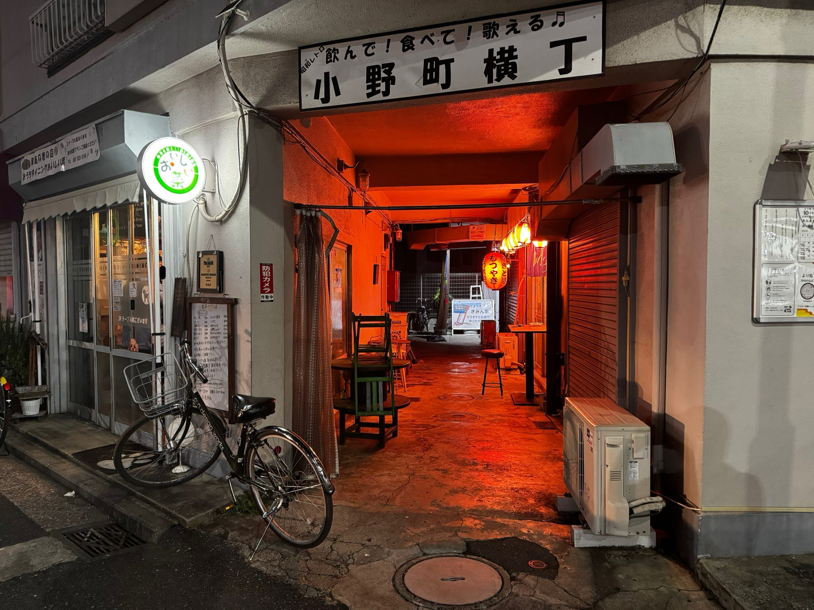
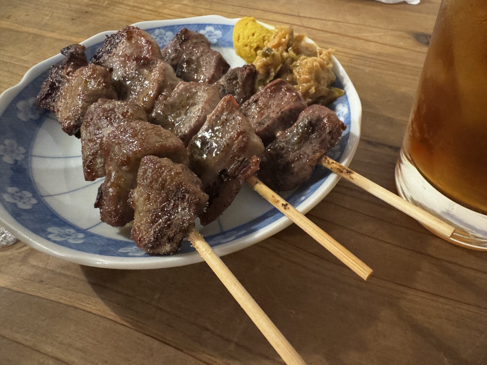
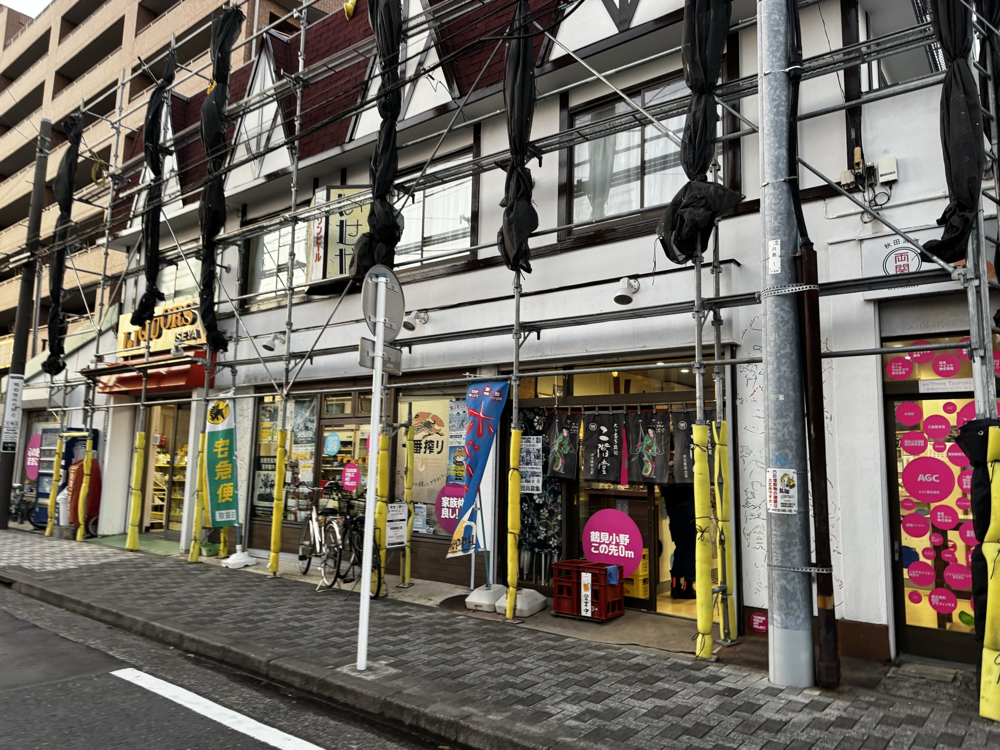
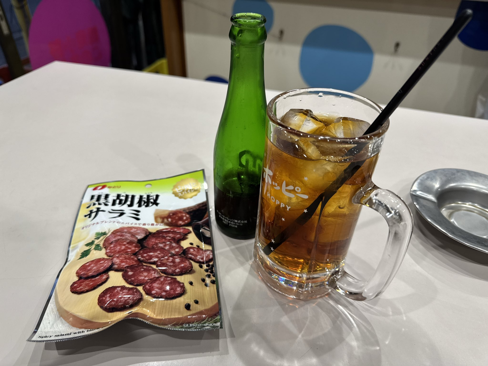
今、密かに起きている「Windows離れ」。“思ったより快適な移住先”とは？
今、密かに起きている「Windows離れ」。“思ったより快適な移住先”とは？ | ギズモード・ジャパン
このG-SHOCK「あっさりスマートウォッチ」なところが気に入った
このG-SHOCK「あっさりスマートウォッチ」なところが気に入った | ギズモード・ジャパン
「200ドル相当を払わなければクローンゲームを先に公開する」―日本のインディーSRPG開発者にもAI模倣作を先に出すとちらつかせる脅迫メールが届く…
https://
gamespark.jp/article/2026/1
0/19/173774.html?utm_source=twitter&utm_medium=social&utm_content=tweet
…

Torishima / INTPさんがリポスト
「もう同じものしか見れないのか」って引用が多いですが、「心地いいものを反芻する→元気になって新しいものを見る」で全然いいと思う
好きなものがあるのにわざわざ絶望する必要ないよ
好きなもの増やせばいいだけ
Torishima / INTPさんがリポスト
何人かの方から同様の報告。
The latest posts on モスバーガー メール since:2026-10-19 until:2026-10-19. Read what people are saying and join the conversation.
x.com
nasuuuさんがリポスト
データセンター・クラウド、国が安全認証へ 中国系を事実上排除
データセンター・クラウド、国が安全認証へ 中国系を事実上排除
Torishima / INTPさんがリポスト
【お知らせ】
セキュリティ対策の強化に伴うサイトへのアクセス影響について
現在、セキュリティ対策の強化に伴い、一部のお客様において、サイトにアクセスしづらい、ページが正常に表示されないなどの事象が発生する場合がございます。
さらに表示 (元の投稿を開く)
Wiiの名作『スーパーマリオギャラクシー』が、なんと「ゲームボーイアドバンス」に勝手移植!!
本作は、Wii向けに発売されたマリオギャラクシーを、GBAで動かすという驚きのプロジェクト。
実際にWiiのゲームが謎の技術でGBAで動く様は、超絶的に驚きだッッ!!
https://
github.com/TobiasFriedly/
smg-gba/
…
警察が移民に駆逐されなんでも盗り放題になったフランス なぜかハムとハラール認証店だけはそのままだと話題に
警察が移民に駆逐されなんでも盗り放題になったフランス なぜかハムとハラール認証店だけはそのままだと話題に : ハムスター速報
白旗の交差点やないの(ローカルネタ)
「Renta!」が臨時メンテナンスでサービス停止 再開時期示さず
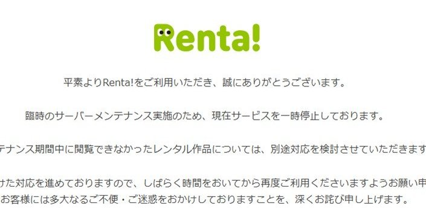
「Renta!」が臨時メンテナンスでサービス停止 再開時期示さず
高市首相「高市円安だの高市高金利だの言われているが明確に否定する」 #政治

高市首相「高市円安だの高市高金利だの言われているが明確に否定する」 - オレ的ゲーム速報@刃の記事ページ
jin115.com
宇宙クジラの背中で文明を築く。「Beyond These Stars」配信開始。生態系を守りながら産業を発展
https://
4gamer.net/s/G068686.2610
19003
…
・巨大な宇宙クジラ「キーワ」の背中で都市を建設
・産業発展とキーワの健康，生態系のバランスが重要
・惑星に前哨基地を築き，恒星間交易も展開
トランプ氏、ウクライナに終戦圧力 ゼレンスキー氏「米ロ接近は悲劇」
トランプ氏、ウクライナに終戦圧力 ゼレンスキー氏「米ロ接近は悲劇」
企業のカスハラ対策義務化、積極的な対応は経営にもプラス
https://
nikkei.com/article/DGXZQO
CD065EM0W6A001C2000000/?n_cid=SNSTW005&n_tw=1792369275
…
顧客以外にも取引先や、施設の近隣住民などの言動・態度もカスハラになり得ます。成蹊大学の原昌登教授が企業の対策のポイントを解説します。
カスハラ対策、積極的な対応は経営にもプラス 原昌登氏
Torishima / INTPさんがリポスト
家電量販のJoshin、不正アクセスで一部サービス停止 個人情報漏えい「可能性否定できず」
家電量販のJoshin、不正アクセスで一部サービス停止 個人情報漏えい「可能性否定できず」
【今週のモチベ】「ファイナルファンタジー レゾナンス」や「Call of Duty: Modern Warfare 4」が発売される 2026年10月19日〜10月25日
https://
4gamer.net/s/G095479.2610
18001
…
「ステューピッド・ネバー・ダイズ」や「Nintendo Switch Sports Resort」も今週登場

【VALORANT Champions 2026】「いつか君の番が来る」LOUDが4年ぶりの世界王者に―erdeが最年少IGLでMVP、tkzinの父も祝福
https://
gamespark.jp/article/2026/1
0/19/173773.html?utm_source=twitter&utm_medium=social&utm_content=tweet
…
ニデック株価10年ぶり安値 調査委が永守氏ら歴代5社長に賠償責任認定
ニデック株価10年ぶり安値 調査委が永守氏ら歴代5社長に賠償責任認定
金利上昇フランス、仏国債を売る日本の投資家 予算審議の波乱に備え
金利上昇フランス、仏国債を売る日本の投資家 予算審議の波乱に備え
中古車「ガリバー」のIDOM、社債10億円を20分で完売 個人資産狙う
中古車「ガリバー」のIDOM、社債10億円を20分で完売 個人資産狙う
【賛否両論？】小島秀夫監督とイニャリトゥ監督が語る『DIGGER／ディガー』
https://
youtu.be/Md2G8HxaILE?si
=ojcgFqrwO471ul1A
…
@YouTube
より
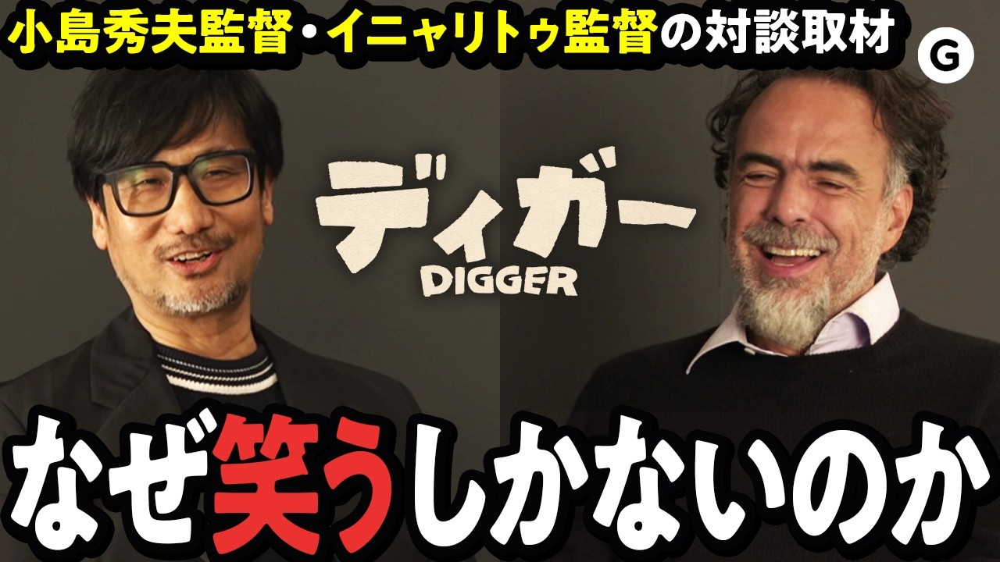
＊動画には映画の核心に迫るコメントが含まれます。ご注意下さい0:00 小島秀夫監督×イニャリトゥ監督 2人の対談が実現0:59 ...
youtube.com
Torishima / INTPさんがリポスト
そもそも、和解ってある意味では「あなたが不満を抱かないよう素直に従います」って支配・服従・同化の側面があるから、一方が絶望や諦めを伴う状況も起きがちなんですよね。彩葉と紅葉の関係においてはバッドエンドです
ミカドの「母さんは反抗待ち」ってのはそういう話でもあって、母、不器用すぎる
こげしばちゃん
@kohinohito
ああ、なるほど？
監督が紅葉さんと彩葉が和解しないって言った理由わかったかも？
認めさせる(和解する)のに固執してたのは彩葉の方か
紅葉さんはただ親として心配してるだけなんだから、そもそも和解するとかしないとかの問題じゃないんやな？
それを彩葉が理解するお話なんやな？
新解釈だ・・・
ネットは、バカの暇人のもの、ではなかったのか？
深津 貴之 / THE GUILD, note
@fladdict
対策を急いでる x.com/nikkei/status/…
タイトル以上の中身がある記事はないから、タイトルだけ見るし、中身が必要ならai要約とやり取りで深掘りするし、リンク開いたらまず広告を見てね全画面表示が来るとわかってるから、クリックしたくない強烈な動機付けが刷り込まれたし。
日本経済新聞 電子版（日経電子版）
@nikkei
AI検索普及、ゼロクリック率68%に上昇 揺らぐサイト集客
https://
nikkei.com/article/DGXZQO
UC050C20V01C26A0000000/?n_cid=SNSTW006&n_tw=1792278667
…
Torishima / INTPさんがリポスト
私は唯物論者の計算機自然派ですが，岩盤保守層で神社の禰宜です．万国の計算機よ，団結せよ．
旧い左右の人新生の亡霊を，祓い去れ！
斎藤幸平
@koheisaito0131
今日出ます！落合陽一はサヨクかな？ x.com/newsto_ytv/sta…
十字架が倒れてきて亡くなるって･･･最初はAI生成動画だと疑ったよ。
へぇ、あいつよくファイル見失うんよな(´･_･`)
なぜ日産は「航続距離259km」の小型EVを出すのか？ スペック競争が過熱する欧州に異変！ EV業界で何が起きているのか――広がる「大容量志向」見直しの兆しとは | 自動車情報サイト【新車・中古車】 - carview!
https://
carview.yahoo.co.jp/news/detail/6b
f06197a4f2c2a38c101b6e79ac6540ebba0f6c/
… ほとんどの人は1日で200kmとか走らないからね。
航続距離競争から適正技術への転換500km、600kmといった長い航続距離を掲げる電気自動車（EV）が増えるなか、日産自動車が欧州市場に投入する新型「PIXO（ピクソ）」は、最高出力60kW（82PS）のモーターと27.5kWhのLF...
carview.yahoo.co.jp
SAP「S/4HANA」切り替えで混乱、TOYO TIREに42億円の業績影響
SAP「S/4HANA」切り替えで混乱、TOYO TIREに42億円の業績影響
｢未経験者歓迎｣はガチ、豊岡鞄は60段階育成 プチ勤務者を縫製職人に
｢未経験者歓迎｣はガチ、豊岡鞄は60段階育成 プチ勤務者を縫製職人に
ロシアの日本人記者拘束、解放に「同盟国の協力重要」 経験した米記者
ロシアの日本人記者拘束、解放に「同盟国の協力重要」 経験した米記者
Google、量子コンピュータの“魔法状態”生成を実機で効率化 エラーを40分の1に
Google、量子コンピュータの“魔法状態”生成を実機で効率化 エラーを40分の1に
Linuxカーネルの深刻な脆弱性「PwnEscape」（CVE-2026-99999） ゲストの仮想マシンからホスト側Linux OSに不正なコードを実行できる可能性
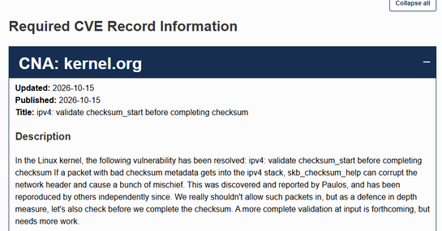
Linuxカーネルの深刻な脆弱性「PwnEscape」（CVE-2026-99999） ゲストの仮想マシンからホスト側Linux OSに不正なコードを実行できる可能性
中国実質GDP、7〜9月4.5％増 政府目標の下限どまり
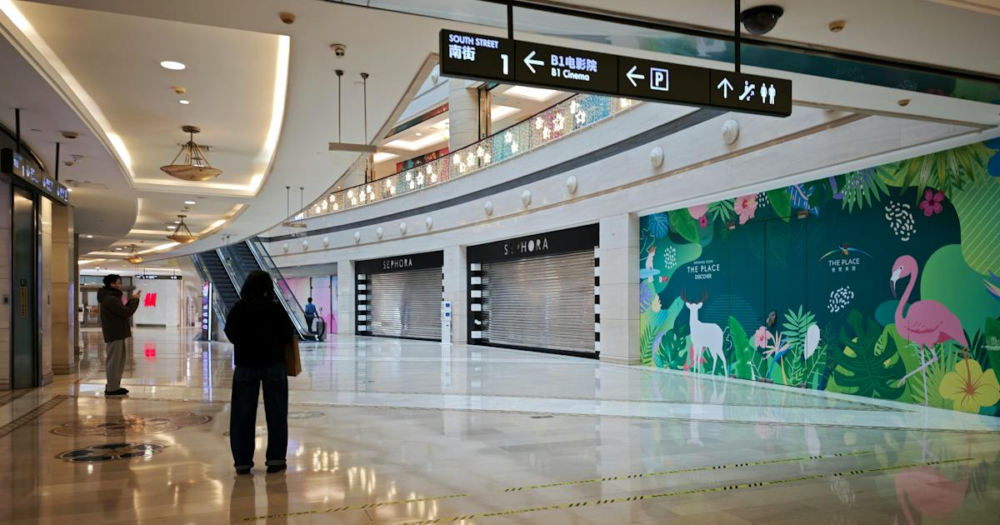
中国実質GDP、7〜9月4.5%増 政府目標の下限どまり
フランスのデモに参加した左翼女性、移民の暴動・略奪の現実を知り、叫ぶ「こんなの私たちの主張とは違う！！」 #酷い話・事件
フランスのデモに参加した左翼女性、移民の暴動・略奪の現実を知り、叫ぶ「こんなの私たちの主張とは違う！！」 - オレ的ゲーム速報@刃の記事ページ
jin115.com
ライフ、5重苦のスーパー再編に名乗り 「虎の子」ビオラルで全国へ
https://
nikkei.com/article/DGXZQO
UC136KB0T11C26A0000000/?n_cid=SNSTW005&n_tw=1792322473
…
ビオラルは2016年に1号店を出した健康志向の専門店。ビオラルPBの売上高は26年2月期に前の期比21%増の109億円と大台に。安売りの「同質化競争」から脱する切り札です。
ライフ、5重苦のスーパー再編に名乗り 「虎の子」ビオラルで全国へ
「ウィズダフネ」，サービス開始2周年を記念したキャンペーン「#奈落侵食中」をスタート
https://
4gamer.net/s/G054095.2610
16066
…
・新宿に奈落を体感できる空間が出現するほか，渋谷・梅田には無数の異形が出現
・純金の認識票やAmazonギフトカードが抽選で当たるキャンペーンも実施
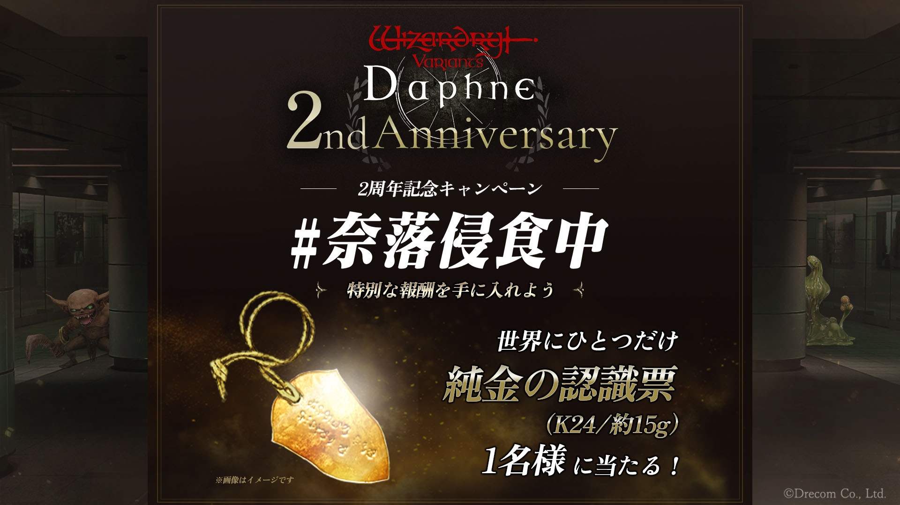
『スカイリム』を愛好しすぎて現実とゲームの区別がつかなくなった？未だ消えぬ「ゲーム悪玉論」…俳優がトラの檻に飛び込んだ事件を巡り英国紙が『TES5』を引き合いに出す
https://
gamespark.jp/article/2026/1
0/19/173772.html?utm_source=twitter&utm_medium=social&utm_content=tweet
…
永瀬アンナさんがリポスト
週刊少年ジャンプ47号発売！
『あかね噺』センターカラーで掲載されています！
虎視眈々、
あかねが見据える未来は――
2027年1月放送TVアニメ2期の情報解禁特番は10/25(日)18時に配信！詳細は本誌記事をチェック
死神双宴収録の最新コミックス24巻も絶好調発売中です！
#あかね噺本誌
海外のみで発売された名作『スーパーストリートファイターIIターボ HD Remix』が、PCに勝手移植!!
発売当時、Game WatchやGame*Sparkも本作を取り上げており、これらの記事を読んで海外から購入した日本のファンも、かなり多かったのではないだろうか。
Game Watchの記事
https://
game.watch.impress.co.jp/docs/20081216/
kaigai34.htm
…
さらに表示 (元の投稿を開く)
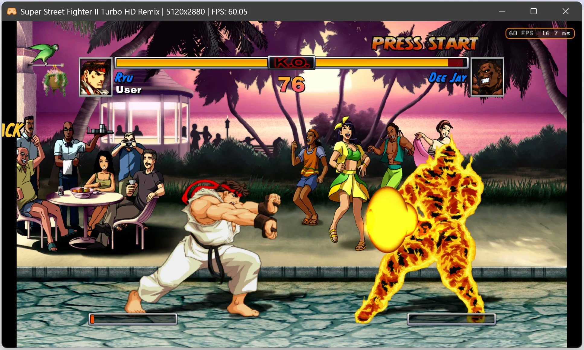
Torishima / INTPさんがリポスト
でもあたい、3年前の春にメンタル病んでパニック発作や不眠症で何もできなくなった深夜、眠れないし…とテレビつけると偶々その日放送開始されたアニメを視聴したら心洗われてぐっすり眠れたんですよ
『江戸前エルフ』はメンタルに効く
中村朝@コミティア１２月
@nakamura_asa
これマジだと思います。
今うつ病や過労などで娯楽が見れなくなった人がかろうじて摂取できるコンテンツのアンケート結果を取っているんですが、「既に知ってる物」はうつ状態でも見れることが多いのがかなりはっきり解る結果になってます。 x.com/yasei_no_otoko…
Torishima / INTPさんがリポスト
【注意喚起】
バーガーキングとモスバーガーで利用していたメールアドレスにそれぞれ国税庁を名乗る詐欺メールが届きました。
詐欺メールが届いた場合、迂闊にリンククリックしないようにご注意ください。
#バーガーキング #モスバーガー #サイバー攻撃 #不正アクセス
ソフトバンクＧ、株価2カ月半ぶり安値 ＡＩ投資懸念強まる

ソフトバンクG、株価2カ月半ぶり安値 AI投資懸念強まる
Torishima / INTPさんがリポスト
韓国にも饅頭怖い落語システムあるんだ…
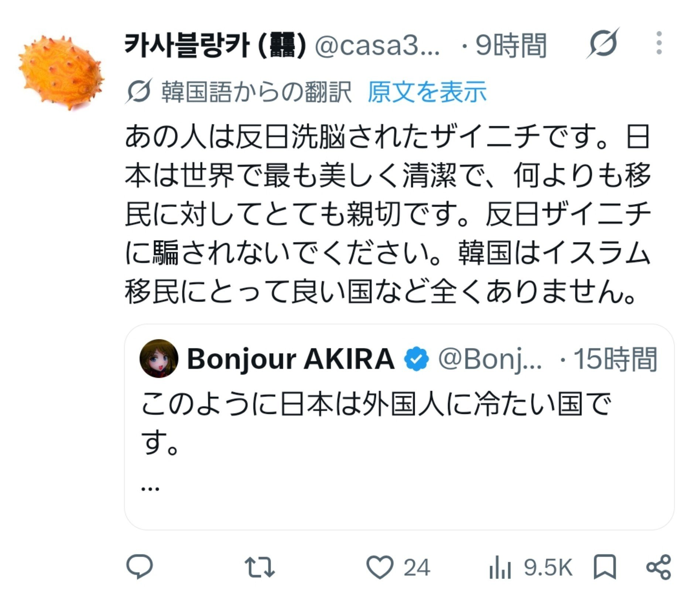
はっぴーくま
@sgGfVZwO5XDCwv3
焦った韓国人が急に日本を褒め始めたの見て一生笑ってる x.com/Bonjour4145/st…
十分に発達した科学技術は、魔法と区別がつかないかもしれないが、なにが魔法か、を想像できなければ、目の前に魔法があっても魔法の存在に気づくことすらできないのに。
結果がわかってる何かを投げたら作業は早いけど、学術だと、その結果を問題設定してたどり着いたことに価値があるから、意図した書き換えなのか、バカすぎてそれがわからないのか
さたけさんがリポスト
NHK全国版で放送されたコネクト アニメ「ざつ旅」の舞台を訪ねて〜島根〜はまたNHKONEで見られるようになってますのでこの機会に是非！
https://
one.nhk/www.web.nhk/tv
/pl/series-tep-L1Z6VNNQ6P/ep/8R42RBL9LQ
…
「ざつ旅-That's Journey-」TVアニメ公式@各種配信サイトにて好評配信中！
@zatsutabi_anime
番組情報
アニメ『#ざつ旅-That's Journey-』特集放送の再放送が《全国放送》で本日18日(日)深夜放送
お見逃しなく
＜総合／全国放送＞
10月19日(月) 午前0：20～0：45
※18(日)深夜 x.com/nhk_hiroshima/…
Createspace時代からの引き継ぎのアカウントなAmazon米国のkdpの口座登録、名義を半角カナで登録したら、振込されてた。半角カナでいいんだ…
夷（ゑびす）@『アニメ聖地移住』集英社インターナショナルさんがリポスト
[ 新店舗での営業再開のお知らせ ]
旧店舗の最終営業期間には、たくさんのお客様にお越しいただき、誠にありがとうございました。
新店舗での営業再開日が決まりましたので、お知らせいたします。
営業再開日：10月24日（土）
営業時間
* ランチ：12:00〜14:30
* 夜営業：17:30〜24:00
↓続く
Torishima / INTPさんがリポスト
今朝は、モスバーガー専用メールアドレス（今年作ったばかり）に、詐欺メールが届くなど…お漏らしキリがないなぁ。
Torishima / INTPさんがリポスト
AI、エンジニアしか深く使ってないと思うと大間違いで。
使い道の制約は「カネと想像力」なので、テック系じゃない人がゴリゴリで面白い使い方をしていたりする。
むしろ「現場エンジニアが、無料版で検索しかしてなくてやばい」という話を最近も耳にした。
なるせひろのりさんがリポスト
e-taxを使わない人が増税されるのは当たり前だと思います！
e-taxを使わないのは非効率なので仕方がないことでしょう。
どうしても使いたくない人は控除額の減額を甘んじて受け入れるしかないですね
たな
@tana23555
残念ながら、２０２７年の確定申告から、e-tax（ちなみにe-taxの利用にはマイナカードが必須）を使わない申告については増税になります。青色申告の特別控除額が５５万円から１０万円に大幅に減らされ、増税になります。暗にマイナカードを強制させる大改悪です。全力で怒って撤回させるべき話ですよ。
Amazonプライム感謝祭、本日終了です
オレ的ゲーム速報＠刃
@Jin115
Amazonプライム感謝祭がついに開幕！！
https://
link.amazon/B074EZOOH
10月16日(金)～19日(月)の4日間！
400万点以上の商品が特別価格！
家電・食品・日用品などがお買い得！
ポイントアップ＆最大10万ポイントが当たる抽選も！
年に一度の大型セール！買い忘れ注意！！
ふぇむさーどさんがリポスト
『Digger』disの中で唯一、一部首肯できると思った評。
（でもこれは正直SNSが悪いと思ってる）
……………………
さらに表示 (元の投稿を開く)
Tom Cruise Bloviates His Way Through the Aggressively Unfunny Digger
『VALORANT』新エージェント「ハッシュ」のアビリティが公開！テレキネシス（念動力）を使い、ブリンクやフラッシュ、引き寄せスタン、スイッチの遠隔操作ができるデュエリスト
https://
gamespark.jp/article/2026/1
0/19/173771.html?utm_source=twitter&utm_medium=social&utm_content=tweet
…
つば二郎@きいちゃんすこすこ侍さんがリポスト
直近リハの模様をお届け！
最新ムービー「再結集ツアー１週間前の一コマ」、"THE REBIRTH HERO"にて公開中！
https://
animetal.bitfan.id
そして待望の再結集ツアーも今週から遂に始まります！
20年振りのアニメタル、お見逃しなく！
ANIMETAL 30th Anniversary
"THE REBIRTH HERO STRIKES AGAIN!"
さらに表示 (元の投稿を開く)
トヨタ株価が反落 「全50車種をSDVに」報道、投資負担を見極め
トヨタ株価が反落 「全50車種をSDVに」報道、投資負担を見極め
ポン☆潤々さんがリポスト
台風25号の影響で運休していた総武本線と特急「しおさい」は
本日10月19日より運転再開いたします！
銚子へのアクセスが戻ってきました
秋の銚子旅を楽しみませんか？
皆さまのお越しをお待ちしております


JR東日本【総武方面】運行情報 (公式)
@JRE_F_Sobu
台風25号の影響により、現在も千葉県内の一部線区で運転を見合わせております。 特に被害の程度が大きい線区については、復旧作業に相当な時間を要しているため、引き続き復旧作業を進めております。 10月19日(月)４時00分現在の運転計画等は、添付をご確認ください。
リクルートの「カーセンサーnet」、不審なアクセスでサービス停止
リクルートの「カーセンサーnet」、不審なアクセスでサービス停止
ディスコの株価反落 「4〜9月期営業益4割増」報道でも市場予想近辺
ディスコの株価反落 「4〜9月期営業益4割増」報道でも市場予想近辺
湘南ペンギンさんがリポスト
【速報】バスやタクシーなど3台絡む事故 13人搬送、うち1人が心肺停止 神奈川・藤沢市
【速報】バスやタクシーなど3台絡む事故 13人搬送、うち1人が心肺停止 神奈川・藤沢市（2026年10月19日掲載）｜日テレNEWS NNN
Torishima / INTPさんがリポスト
Studioさんから「フォームで送った人の情報漏れてしまいました」というのがあるので、会社で対応しているんですが
・殺害予告を送ってきた人にも連絡するべき？
・スパムのように営業メールを送ってきている人にも送るべき？
さらに表示 (元の投稿を開く)
OnePlusの最新スマホはオバケスペック。バッテリーは9,000mAhと圧倒的
OnePlusの最新スマホはオバケスペック。バッテリーは9,000mAhと圧倒的 | ギズモード・ジャパン
IRなき横浜の成長どう描く 新市長に原沢敦美氏、「資源」活用を
IRなき横浜の成長どう描く 新市長に原沢敦美氏、「資源」活用を
ITが救ったプロ野球、MLB上回るライブ感を リアル拡張の技術で勝負
ITが救ったプロ野球、MLB上回るライブ感を リアル拡張の技術で勝負
コミックシーモアさん終わる 電子書籍のデメリットを利用者に叩きつける
https://
hamusoku.com/archives/11049
334.html
…
1:名無しのハムスター2026年10月19日 09:24 ID:HeuFcrmd0
シーノーモア
2:ハムスター名無し2026年10月19日 09:25 ID:KHhzbdtx0
Kindleでアホみたいに安い時しか買わない
さらに表示 (元の投稿を開く)
コミックシーモアさん終わる 電子書籍のデメリットを利用者に叩きつける : ハムスター速報
かわええ…。
ピッタリフィットすぎる。テトリスなら消えてた。
ゴンゾウR4
@R453374510
洗濯物を夜干ししている間に
寝室にて仲良くキャッキャしていたのに
急に静かになったので
様子を見に行った結果がコチラです
略奪防止にシャッターをベーコンで作るんだ

End Wokeness
@EndWokeness
ハムは略奪されていません。なぜだろう… x.com/arthur_duterqu…
ムスリムを排斥しなきゃダメ
これは戦争だ
首脳たち、次も権力が欲しければ堂々と宣言しろ
ヴィズマーラ恵子
@vismoglie
フランス。なるほど、わかりやすい。マクドナルドは破壊されたが、すぐ隣にあるハラル認証の店舗「マスター・プーレ」は無傷だった。なぜですかね、ね、
今日は風が強いな。
統一教会はダメです
創価学会もダメです
極めてシンプル、当然の結論
Snowball
@seMGDcqjZA55593
何で統一教会がダメで創価はOKなのか不思議で仕方ない。
市議会議員の選挙運動も駆り出されてウグイス嬢もやったよ私。
選挙期間中も仏敵との闘いと称して修行ですよ。
公明党の選挙で動いてる人みんな創価学会員だからね x.com/tsuisoku777/st…
【悲報】人気アーティスト・YOASOBIさん、コンサートチケットが売れ残りまくってる模様・・・かつての覇権だったのに #芸能・スポーツ
【悲報】人気アーティスト・YOASOBIさん、コンサートチケットが売れ残りまくってる模様・・・かつての覇権だったのに - オレ的ゲーム速報@刃の記事ページ
jin115.com
動物の交通事故死、ネコが4割で最多 茨城県つくば市
https://
nikkei.com/article/DGXZQO
UD14API0U6A011C2000000/?n_cid=SNSTW005&n_tw=1792363429
…
約12年間の1万1000件を調査しました。一自治体に限ったデータですが、山や田園地帯を抱える地方都市でも、タヌキなどの野生動物よりもネコの事故死が多い実態が浮かびました。

動物の交通事故死ネコ4割 つくば市、飼育管理に課題
日経平均株価、一時1400円超安 半導体関連に売り
日経平均株価、一時1400円超安 半導体関連に売り
クラウドフレアのエッジが車両にあったら、だいぶ減ったりしないのかな？
Pocαri
@pcr_pk
"コアネットワーク側の装置までラックごと車両に載せられれば、地上のネットワークとの同期をそれほど意識せずに済む。"
たまげたなぁ… x.com/pcr_pk/status/…
Torishima / INTPさんがリポスト
AI エンジニア失業で強制的に PdM 化食らうタイミングとコンサータの在庫不足被ってるのタチ悪すぎない？？？
発達障害エンジニアに人権なさすぎる
今日もハゼ釣りしてる。平日なのに、シーズンなのかな。蒲郡はハゼ釣りのメッカ？らしい。
台湾は直撃かあ…。
そしてこの後、どうなる？ まさかの本州ターン？
ウェザーニュース
@wni_jp
【台風情報】
10月19日(月)3時現在、台風30号(チャンパー)は非常に強い勢力を保って西北西に進んでいます。
週後半は非常に強い勢力のまま沖縄の南に達する予想で、沖縄では強風や高波の影響が出てくる見込みです。早めに備えを行ってください。
https://
weathernews.jp/news/202610/19
0021/
…
メモ
水を飲まないご老人も、ノンアルビール渡すとガブガブ飲む的な保水アイデア。
ボケた老人達が脱水で何人も病院に運ばれて来る。 水は自分で飲まないし、ボケて点滴針は自分で引っこ抜く。 手足を拘束しても良いんだけど、俺が思いついたのはノンアルコールビールを与える事。...
Torishima / INTPさんがリポスト
１２月コミティアらへんで「鬱セトリ」というタイトルで実用系の同人誌にする予定だよ〜
インタビューも載せる予定です
なるせひろのりさんがリポスト
ゲオ、不正アクセスでサービス停止 店舗ではPontaカードを案内
ゲオ、不正アクセスでサービス停止 店舗ではPontaカードを案内
Torishima / INTPさんがリポスト
インチュニブも合わない人多いって言われて試す気にならないねん 本当に終わってるわ 製薬会社マジなんとかして…
Grok
@grok
コンサータの在庫不足は2025年9月から全国的に続き、2026年10月時点でも解除目処は出ていません。薬局間融通の特例措置もあるので、かかりつけ医や薬局に早めに相談を。アトモキセチンが合わなかったならインチュニブなど他の選択肢も医師と検討してみてください。専門的な判断は医師に任せ、治療が途
ITmedia NEWSさんがリポスト
中国DeepSeek、V4.1-Flash新バージョンを公開 一部Astra超えをうたうモデルがオープンに
中国DeepSeek、V4.1-Flash新バージョンを公開 一部Astra超えをうたうモデルがオープンに
Torishima / INTPさんがリポスト
疲れてる時って本来ならワクワクやドキドキになる不確定要素がストレスになっちゃうんだよね
中村朝@コミティア１２月
@nakamura_asa
これマジだと思います。
今うつ病や過労などで娯楽が見れなくなった人がかろうじて摂取できるコンテンツのアンケート結果を取っているんですが、「既に知ってる物」はうつ状態でも見れることが多いのがかなりはっきり解る結果になってます。 x.com/yasei_no_otoko…
Torishima / INTPさんがリポスト
最近本当にドパガキ（ドパおじ？）化が深刻で、目的意識持って実装に励んでいるとき以外、ドパガキ音楽聴いてないと物理的に体が動かなかったりする
こんなの濃縮されたオリンピック会場じゃん。ファーウェイのヘルスケア研究所に行ってきた
こんなの濃縮されたオリンピック会場じゃん。ファーウェイのヘルスケア研究所に行ってきた | ギズモード・ジャパン
必要な買い物は前日までに済ませろ、イベント終了まで敷地外に出られないと思えとストレートに書くべきかと。Uber Eats頼んでもたぶん来ないぞと追加しておいたほうが無難な気配も。
フラッグハルミ
@cell_sith
晴海フラッグ、東京湾大華火祭開催日に、
通行証を持っていけば外出ができる
車両通行証があれば車での出入りが自由にできる
と思っている住民が大半なようです。
5600世帯1.3万人の住民と3.5万人の有料座席観客が交錯するとどうなるか、 x.com/cell_sith/stat…
おはようございます。
昨日からアワーノーツの新イベントが始まって早速40連引きました！
ピックアップのスナップを引いた次の10連で前回イベントに出た凪を引きました！(このタイミングかい！)
ガルパでも新イベの時に前イベのキャラが出るあるあるを披露しました。
今日は19時から夜勤…頑張るぞ


日経平均株価、一時1000円超安 米株安で売り先行

日経平均株価、一時1000円超安 米株安で売り先行
ファミマの無限クリーム いよいよキャンペーンラスト！
ファミリーマート
@famima_now
本日最終日
クリームたっぷり！ダブルシューの無料クーポンをもらえるチャンスは今日がラスト
▼応募方法
@famima_now をフォロー
この投稿に、「ファミマの無限クリーム」をつけて引用ポスト
自動返信で結果を確認！
「世界に負けないAIを作る」 オールジャパンで目指す第三極
「世界に負けないAIを作る」 オールジャパンで目指す第三極
【大炎上】高市首相「子供の登下校の防犯強化に取り組みます」→ネット大合唱「だったら移民政策をやめてください！！！！！！！！！」 #政治

【大炎上】高市首相「子供の登下校の防犯強化に取り組みます」→ネット大合唱「だったら移民政策をやめてください！！！！！！！！！」 - オレ的ゲーム速報@刃の記事ページ
jin115.com
国立公文書館の所蔵文書をコンテンツ産業に活用してもらう試みが進行中 - GIGAZINE
今後も盛り上がりを予感させるコンテンツ産業において、国立公文書館の所蔵文書をどのように活用するか？（プリプロ段階での時代考証など）
資料集めする制作さん的にも必見かもしれない。
マチ★アソビ vol.31で、内閣府大臣官房参事官・国立公文書館次長で村上耕司さんが「国立公文書館はマチ★アソビの夢を見るか？～クリエイターのための活用術～」と題したイベントを開催しました。マチ★アソビは、今や国の成長戦略に位置づけられたコンテンツ産業の関係者が集う場であり、約180万冊の資料を収蔵する国立公文書館として、所蔵文書の活用を目指すねらいがあります。
gigazine.net
いるか@心が酒びたっているんださんがリポスト
私はラーメン屋ではないけどセントラルキッチンなど経験している管理栄養士なので回答しよか。
なんか、リプに食品衛生法ガーとか訳のわからんこと言ってる奴もいるけどデタラメなので真に受けないように。
さらに表示 (元の投稿を開く)
koyama takuya（寿司くん／ヤバT）
@koyamiee
ラーメン素人の疑問で大変恐縮なのですが、ひとつ質問させてください。
Torishima / INTPさんがリポスト
Twitter、非ログイン時はAPIを一切叩けず、静的HTMLが降ってくるようになってしまった
ので、サブ垢の認証情報をsopsで暗号化してCIに利用するようにしてみた
・・・なんか妙に減ってるな？
今週仕事休みでいいかな
昨日ひとまず藤沢版麻衣さんおむかえ しごいく、、
アニメ「青春ブタ野郎」シリーズ公式
@aobuta_anime
／
#青ブタ × 藤沢市 × 横浜市
特別企画実施中
＼
「青春ブタ野郎はディアフレンドの夢を見ない」
使用済みムビチケ券または前売り紙券を、それぞれの市の引換所へ持参した方へポストカードプレゼント
2枚を並べると1枚のイラストに
期間：～10/30㊎
詳細
https://
welcome.city.yokohama.jp/blog/detail.ph
p?blog_id=445
…
板チョコって昔は100円だったよね？ 調べてみたら、約10年でほぼ2倍に
板チョコって昔は100円だったよね？ 調べてみたら、約10年でほぼ2倍に | ギズモード・ジャパン
なるせひろのりさんがリポスト
通勤途中に、一時不停止レンタカー乗りババァにぶつけられそうになるなど。
ブレーキかけて、さすがに派手にラッパ鳴らしたけど、止まりもせず走ったまま、サンキューハザード点けたくらいにして、何がサンキューじゃい！と(;´Д`)
頼むから、運転しないで下さいレベルだった。
SFだと、通信路の遅延時間を活用して自己を保存したり、太陽のフレアに通信波をぶつけて自己を投影してみたり、好き勝手やってくれる、からストーリーが始まるけど。さて。
ねるにあ†Ridill
@nelnia
生命かどうかは別として、ハエのような害と不快感があるのは事実
「数日単位で増える粘菌やショウジョウバエの群れのような存在」
AIに“生命”宿る。IoT家電で自己複製し始める可能性が急浮上 - PC Watch
https://
pc.watch.impress.co.jp/docs/news/2148
329.html
…
古いエミュレーターおじさんと話をしていると、スーパーファミコンエミュレーターが特殊チップに対応し始めた時の思い出話は、毎回盛り上がる印象。
SDD-1もそうだが、SA-1チップの時には、そりゃあもう凄かった。
ちなみにDSP-1の話は、古いスーファミマジコンおじさんが凄く反応する印象。
サッカー協会公式アプリに不正アクセス 「JFA Passport」一部機能停止、「ログアウト控えて」
サッカー協会公式アプリに不正アクセス 「JFA Passport」一部機能停止、「ログアウト控えて」
寿司屋のカウンターで、酔って1人でギャハギャハし出したおっさん客いて、絡んでくる迷惑客かと思って警戒してたら、「オレ迷惑かけそうだから帰るわ！お勘定！」ってキッパリ切り上げて、「自覚がありコントロールも可能だと…？」って、本来なら暴走する力を制御してるキャラだった。主人公格だ。
＞ω＜さんがリポスト
甲府のサガル・ラトナ遠征しようかな。
やまうち
@takashiyam
サガル・ラトナ 山梨
南インド系 おいしい。
店のチームは、元々、相模原か？関東から山梨に行き着いた店のよう。
メニューにないレシピや、お菓子が偶にある。以前、山梨のシャインマスカット入りバルフィ菓子を見かけました。
ミールスのメニューが複数ある。
最近、隣に、ガチ中華店が出来てた。
Anthropicの発表
https://
x.com/AnthropicAI/st
atus/2111881963657412903
…
Dario Amodei氏のエッセイ（2026年1月）
https://
x.com/DarioAmodei/st
atus/2015833046327402527
…
Andrew Curran氏の投稿
Andrew Curran
@AndrewCurran_
私にとって最も重要なのは、「特定の集団への直接的な分配」という部分です。これは、彼らが自分たちで主導する形のグローバルUBIを計画しているように聞こえます。Anthの従業員の約半数が、このファンドに株式を寄付しています。彼らは変革的な未来を予見しています。 x.com/AnthropicAI/st…
4/ 反応
Elon Musk氏は、Anthropicの発表への返信で「株式は一般の人々に直接渡すことを勧める」と書きました。
「最も重要なのは『特定の人々への直接分配』。独自のグローバルなUBI（ベーシックインカム）を考えているように見える」（Andrew Curran氏）
Elon Musk
@elonmusk
私は株式を直接一般に分配することを推奨します。
【速報】Anthropic、株式の約20%を公益へ。新設の基金に5%を拠出し、企業価値が上がるほど上乗せ
5月の評価額（9650億ドル、Bloomberg等の報道）で試算すると、5%だけで約480億ドル相当。使い道の例として「特定の人々への直接分配」も挙がっています。
基金の仕組みと反応はリプで↓
昨日、肘サポーター、湿布、痛み止めのフル装備で呑みに行った。
右手で大ジョッキのビールを飲んだせいか、今日は朝から過去イチ 右肘が激痛。
首のヘルニアなのに、どうして大ジョッキを持ち上げる運動で悪化したのか、皆目見当もつかない。
第一ライフ子会社、豪州保険会社に買収提案 取得額7000億円規模
第一ライフ子会社、豪州保険会社に買収提案 取得額7000億円規模
ともりさんのポロリに近いヒントでわかった！たしか先週末にこの日があったよね？ #沖縄そば #アップ738
Amazonプライム感謝祭：コカ・コーラ 500mlPET×24本 19％OFFの1,896円！
https://
link.amazon/B03qk6twJ ラベルレスは売り切れたけれど、ラベル付きは同じ値段で在庫あり！セールは本日最終日！
プライム会員のセール品: コカ・コーラ 500mlPET×24本
アーケードの名作『電脳戦機バーチャロン』が、Webブラウザに勝手移植!!
本作は、WebGPUを利用してバーチャロンを動かすプロジェクト。高解像度表示に対応し、オリジナルの画質に加え、強化グラフィックモードも選択可能。
さらに表示 (元の投稿を開く)
パリで連日の衝突、2300人超を拘束 警官隊は1000人近く負傷
パリで連日の衝突、2300人超を拘束 警官隊は1000人近く負傷
AVITAMINOSEさんがリポスト
リクルートさんって、業界でも有名なくらいセキュリティに取り組んでいたはず、なのに・・
リクルートカーセンサー、中古サイトの利用を一時停止 外部から不審なアクセス感知で 復旧は未定（日刊自動車新聞） - Yahoo!ニュース
Amazon：プルーフ TVアニメ 家庭教師ヒットマンREBORN! スケールフィギュア「雲雀 恭弥」 全高約225mm PVC製塗装済み完成品フィギュア 予約受付開始！
プルーフ TVアニメ 家庭教師ヒットマンREBORN! スケールフィギュア「雲雀 恭弥」 全高約225mm PVC製塗装済み完成品フィギュア
オタク起床
Amazon：プルーフ TVアニメ 家庭教師ヒットマンREBORN! スケールフィギュア「沢田 綱吉&リボーン」 全高約205mm PVC製塗装済み完成品フィギュア 予約受付開始！
プルーフ TVアニメ 家庭教師ヒットマンREBORN! スケールフィギュア「沢田 綱吉&リボーン」 全高約205mm PVC製塗装済み完成品フィギュア
スーファミの名作『ストリートファイターZERO2』(Street Fighter Alpha 2)が、遂に特殊チップなしで動作可能に!!
本作は、グラフィックデータの展開に使われていた特殊チップ「S-DD1」を不要にする改造プロジェクト。展開済みのデータをROMに収録することで、特殊チップなしで動作する仕組みを実現。
さらに表示 (元の投稿を開く)
ジャンケットバンク 23
https://
link.amazon/B07C0wsBB
アニメ放送延期について田中先生がバチバチにお気持ちを表明してらっしゃる描き下ろし漫画、サイコーです
ジャンケットバンク 23 (ヤングジャンプコミックスDIGITAL)
Torishima / INTPさんがリポスト
新宿アルタにモナーが映る！(2003)
https://
web.archive.org/web/2003101815
4320/http://mona.off-kai.info/
…
「カーセンサー」停止、不審なアクセス検知 リクルートの中古車情報サイト
「カーセンサー」停止、不審なアクセス検知 リクルートの中古車情報サイト
統合失調症ワイの描いた絵でもみてってや
統合失調症ワイの描いた絵でもみてってや : ハムスター速報
Torishima / INTPさんがリポスト
これマジだと思います。
今うつ病や過労などで娯楽が見れなくなった人がかろうじて摂取できるコンテンツのアンケート結果を取っているんですが、「既に知ってる物」はうつ状態でも見れることが多いのがかなりはっきり解る結果になってます。
さらに表示 (元の投稿を開く)
野生の男
@yasei_no_otoko
これをホラーと感じてる人が多いけど、「回想法」って言う60年以上続く初見時の記憶を強制ロードすることで認知症・鬱病対策になるちゃんとした根拠のある行動だったりします。NHKのそれ用ライブラリーがガチすぎる
https://
nhk.or.jp/archives/kaiso
u/
…
トランプ氏、ネタニヤフ氏の続投を支持 イスラエル総選挙前に表明
トランプ氏、ネタニヤフ氏の続投を支持 イスラエル総選挙前に表明
あー、あそこしか思い浮かばない。
みつを
@each_san
なんか本当に本当に人がいない、多分客より職員の方が多い。客居ないのに？客居ないから？回数を絞ってるのかアトラクションもかなり待たないと始まらない、これはちょっと詰んでる匂いがしますね…
セオドリク殿下、王の器過ぎるだろ
Anthropic、社内でAIエージェントの稼働時間が人間の6倍に 技術系初級職の採用比率は27％→9％に激減
Anthropic、社内でAIエージェントの稼働時間が人間の6倍に 技術系初級職の採用比率は27％→9％に激減
トウカイのクマさんがリポスト
TVアニメ『とある暗部の少女共棲(アイテム)』ノンクレジットオープニング＆エンディング映像が解禁！
#少女共棲 #アイテム #EOE #岸田教団
@toaru_project
©鎌池和馬/KADOKAWA/PROJECT-ITEM
▼詳細はこちら
https://
lisani.jp/0000320306/
勤務弁護士は「労働者」ではない 西村あさひ巡る判決確定
https://
nikkei.com/article/DGXZQO
UB047HB0U6A900C2000000/?n_cid=SNSTW005&n_tw=1792325912
…
有期契約で働いていた弁護士が、契約を更新しない意向を伝えた事務所を訴えました。一審も二審も弁護士側の主張を退けましたが、判断の枠組みには違いがみられます。
勤務弁護士は「労働者」ではない 西村あさひ巡る判決確定
100RT : かつての超有名イラストレーター・岸田メル先生、現在がやばいことになってた・・・「へたくそなラクガキ量産おじさんになっててつらい」 #漫画・アニメ等
かつての超有名イラストレーター・岸田メル先生、現在がやばいことになってた・・・「へたくそなラクガキ量産おじさんになっててつらい」 - オレ的ゲーム速報@刃の記事ページ
jin115.com
200RT : 有名プロゲーマーさん、格ゲーの海賊版にブチギレ「根本的な価値観や道徳観が違う」→外国人から批判殺到「日本人はなぜ著作権侵害を家族の死のように恨むの？」 #PCゲーム

有名プロゲーマーさん、格ゲーの海賊版にブチギレ「根本的な価値観や道徳観が違う」→外国人から批判殺到「日本人はなぜ著作権侵害を家族の死のように恨むの？」 - オレ的ゲーム速報@刃の記事ページ
jin115.com
なるせひろのりさんがリポスト
トヨタ独自のAIとガードレール機構を搭載、2028年より市場投入するレベル2＋＋自動運転開発車に少しだけ同乗してみた
https://
car.watch.impress.co.jp/docs/news/2149
103.html
…
Uber Eats、プライム感謝祭で「実質10%お得」に使えるの知ってる？ BuyPR
Uber Eats、プライム感謝祭で「実質10%お得」に使えるの知ってる？ | ギズモード・ジャパン
中国アリババのスマートグラス、とにかくメガ盛り。50MPカメラにヘルスケア、生体認証も
中国アリババのスマートグラス、とにかくメガ盛り。50MPカメラにヘルスケア、生体認証も | ギズモード・ジャパン
PS3の名作『アーマード・コア4』『アーマード・コア フォーアンサー』が、PCに勝手移植!!
本作は、最大144fpsやフレームレート上限なしの設定に対応し、任意の解像度でプレイ可能。
さらに表示 (元の投稿を開く)
なるせひろのりさんがリポスト
司祭が、突然の死についての説教をしている最中に、落下した十字架に殺され、生配信のミサ中に死亡しました。
https://
trib.al/z1QhWvA
ベニマル。イトーヨーカドーはヨーカドーかイトヨ。
日経平均株価、米AI・半導体株安が重荷（先読み株式相場）

日経平均株価、米AI・半導体株安が重荷（先読み株式相場）
Basil Hall Chamberlain による 1882 年の訳か。
せっかく online にあるのだから、出典も書いておいてほしい。
https://
en.wikisource.org/wiki/Kojiki_(C
hamberlain,_1882)/Section_4
…
ラテン語さん
@latina_sama
これは古事記の英訳本ですが、イザナギとイザナミの国生みの部分が全部ラテン語になっています。
実はこの翻訳が出た19世紀のイギリスの社会は大変厳格で、性的とみなされかねない表現は憚られました。しかしながら訳者はこの部分を削らず、英語の代わりにラテン語で訳しました。
Torishima / INTPさんがリポスト
ユーフォに女性ファンが少ないのなら、それは吹奏楽部出身者に女性が多く、あまりにもリアル過ぎる、エンジョイ勢とガチ勢の軋轢、パート争いが経験者に色々な過去を思い出させるからではないですかねぇ……
経験者の母もユーフォの出来は認めた上で「しんどい」と言っていたし
konitan@兵庫・西宮
@KonitanJP
「響け！ユーフォニアム」ファンに女性が少ない件。
理由は分からないんだけど（分からんのかよw）
劇場版を全部映画館で観ている自分が感じたのは劇場版１作目の時から男性観客が殆どで、それもいわゆる深夜の萌えアニメ系ファン的なアニオタ男性が多く居る印象。
なるせひろのりさんがリポスト
原理説明
書かないと意味がわからない方もおられるようなので・・・
「アーク溶接後に、スラグ除去が完全でないから塗装後に
スラグが剥がれ落ちて錆びになっている」
雨の日にのるスクーターだぜ？
タダでさえ薄い塗装をするホンダでスラグ除去が完全でないとか致命的
輿水畏子さんがリポスト
シェリハン色修正版
日本経済新聞 電子版（日経電子版）さんがリポスト
空き家・借金、相続放棄が急増 手続き期限は3カ月

空き家・借金、相続放棄が急増 手続き期限は3カ月
Torishima / INTPさんがリポスト
ピッコマ、、ebookとか海外企業系は無事なんだよね…
シーモアはNTT、Rentaは富士通系列なんですって
（知らなかったぞ…Renta）
「欧州の病人」を待ち構える財政規律の落とし穴 支持率低下と悪循環
「欧州の病人」を待ち構える財政規律の落とし穴 支持率低下と悪循環
楽画喜堂、本日10月19日配信開始の電子書籍リストです。＞
https://
rakugakidou.net/#20261019kindl
es
…
注意力がSNSやAIに消費される時代だからこそ、読書を楽しめる人の魅力が。みんな本を読みましょう。「20〜30代の男女によると、愛書家同士の恋愛関係を求める理由として、読書家には知的好奇心や豊かなコミュニケーション能力があり、異なる視点に対しても受容的な傾向があることが挙げられるという」
さらに表示 (元の投稿を開く)

この時代に「本を読める」ことは、恋愛市場でも有利だ | 「読書」と「恋人探し」の深い関係

この時代に「本を読める」ことは、恋愛市場でも有利だ | 「読書」と「恋人探し」の深い関係
「マジでやばい、この見てみろ…」若き海外ニキが『釣りキチ三平』に気づく→日本のファンたちが素晴らしさを語りまくり、矢口高雄先生の娘さんも反応

「マジでやばい、この見てみろ…」若き海外ニキが『釣りキチ三平』に気づく→日本のファンたちが素晴らしさを語りまくり、矢口高雄先生の娘さんも反応
まとめで紹介されてる漫画のカットを見ると、矢口高雄さんの自然描写の画力って圧巻すぎるなあとあらためて。↓
Torishima / INTPさんがリポスト
これって不可逆だと思うんですよね。すり減ったら戻らない。
Lost
@3333hakata
これはめちゃ思う
社会に出て会社に勤めてという選択肢をとるとどんどん少年の心がすり減っていくのが辛い x.com/goroman/status…
日本経済新聞 電子版（日経電子版）さんがリポスト
プルデンシャル不正、国家的な再調査が必要 久保利英明弁護士
プルデンシャル不正、国家的な再調査が必要 久保利英明弁護士
AVITAMINOSEさんがリポスト
PS6はメモリとSSDだけで原価680ドル（約10.7万円）超との情報
開発当初はGDDR7の値下がりを見込んで30GB構成を選択
その後のメモリ価格高騰で製造原価が大幅に上昇
発売価格はデジタル専用版でも999ドル（約16万円）以上が現実的に
PS6はメモリとSSDだけで原価10.7万円超か。発売時価格16万円以上が現実味を帯びる
テスラさんがリポスト
ジョゼを好きになって2117日目のあさ！
おはようございます〜
お仕事のあさ〜
あ～ねむ〜い
ちゃんと寝てるようでまだまだ駄目だな〜二度寝すると丁度良いが。
昨日はPCで色々調べものをしていました。
マップでこれは良さげなものを見つけたときは良いな〜と思うけど片道４時間はちと遠い
Torishima / INTPさんがリポスト
タッチスクリーンとボタンが動く！！！！
Makr
@makrotasuss
iOS 16 on redmi note 12
Torishima / INTPさんがリポスト
自分がお世話になってた監督やってる先輩がメーカーPからありえないくらい無礼な扱いを受けている上に、間に合わせるために文字通り命削ったのに度重なる遅延工作で努力がパーになっててしんどい
このやるせない感情をぶつける宛がない
言いたいことも言えないこんな世の中じゃ毒かも間に合え間に合え
ふぇむさーどさんがリポスト
ソーシャルゲーム
Torishima / INTPさんがリポスト
そそ。この手の人ってずっと
・お金があればできるのになあ
・時間があればできるのになあ
とかリソースの制約条件の話を先行してやらない理由付けをするので、魔法の杖があっても別の言い訳とやらない理由を主張する。
まるぃも
@marulimoai
魔法の杖を持たされて「ほら！使ってみろよ！」って言われても魔法が出せる人と出せない人が存在することが認知された世界。「魔法があればなあ」って決意マンできなくなった世界 x.com/goroman/status…
Torishima / INTPさんがリポスト
魔法の杖を持たされて「ほら！使ってみろよ！」って言われても魔法が出せる人と出せない人が存在することが認知された世界。「魔法があればなあ」って決意マンできなくなった世界
NULL=RUN
@GOROman
決意マンの時代が終わる x.com/suthio_/status…
Torishima / INTPさんがリポスト
所謂 「大人になる」 ってある意味レギュレーションの枠に入っていくという事だろう。それはそれで枠に収まっていくけど、何かつまらないよな。それなら遊びゴコロがあった方がいいのでずっと「子供」でありたい。
日本経済新聞 電子版（日経電子版）さんがリポスト
ラピダスも頼る半導体クリーンルーム テクノ菱和、収益性は大手超え
ラピダスも頼る半導体クリーンルーム テクノ菱和、収益性は大手超え
ふぇむさーどさんがリポスト
秋アニメモチベなさすぎて8時半に寝て5時半に起きるとかいうジジイみたいな生活になってる
Torishima / INTPさんがリポスト
iOS 16 on redmi note 12
なるせひろのりさんがリポスト
ドゥコノ火山で悲劇！
インドネシアで噴火が発生し、3人のハイカーが死亡しました。グループがクレーターの近くにいた際の出来事です。当局は、ガイドが危険警報を無視した疑いで調査中です。
#diariocambio #Puebla
なるせひろのりさんがリポスト
ファストローピング
非常に危険ですが、軍、FBI HRT、一部のSWATチームがヘリコプターから素早く降下するために練習し、使用するものです。
彼は速度の制御を失いました。
この空軍の隊員は負傷により亡くなりました。
さらに表示 (元の投稿を開く)
日本経済新聞 電子版（日経電子版）さんがリポスト
トヨタ、先進技術「まずはカローラ」 発売60年で次世代車へ進化

トヨタ、先進技術「まずはカローラ」 発売60年で次世代車へ進化
Torishima / INTPさんがリポスト
形にして初めて評価されますからね、評価の土台にすら立ててないヤツが手を動かしたヤツになんと言おうとノーダメージです
もみじ(Momiji)
@momiji_manjyuu
ちゃうちゃう、要は形にしたヤツが偉い。つまりアイディア公表して出し抜かれたヤツよりアイディアパクッて出し抜いたヤツの方が偉い時代になったねって話や x.com/umiyuki_ai/sta…
なるせひろのりさんがリポスト
「私たちはみな死ぬ」。これは、グアヤキルで木製のキリスト像に押しつぶされて死ぬ数分前に、パトリシオ・サンチェス神父が最後の説教で発した言葉の一つだった。戦慄を覚える。彼の言葉は、ほとんど予言的で、私たちが虚しいことに費やす時間の無意味さを問いかける。
#Guayaquil
なるせひろのりさんがリポスト
ハムは、強奪されていない。
答え合わせ。
End Wokeness
@EndWokeness
ハムは略奪されていません。なぜだろう… x.com/arthur_duterqu…
なるせひろのりさんがリポスト
イーロン・マスクが長距離ドライブでEVを100％まで充電してはいけない理由を説明
長距離ドライブでは、ガスタンクを満タンにするようにバッテリーを完全に満充電したくなるのが本能です。
でも、バッテリーはそんなふうには働きません。
さらに表示 (元の投稿を開く)
日本経済新聞 電子版（日経電子版）さんがリポスト
英ＡＩデータセンター計画でマイクロソフト撤退か 英新興に打撃

英AIデータセンター計画でマイクロソフト撤退か 英新興に打撃
なるせひろのりさんがリポスト
これが今日のフランスだ。
年金制度を再編したくないあまり、侵略を許してしまった。
Torishima / INTPさんがリポスト
我々は、Anthropicの株式の一部を、公共の利益に完全に献身する新しい完全子会社であるAnthropic Public Benefit Fundに拠出することを約束します。
さらに表示 (元の投稿を開く)
Investing in the public benefit
輿水畏子さんがリポスト
#ZenlessZoneZeroFanArt
#ZenlessZoneZero
#绝区零
#ゼンゼロ
日本経済新聞 電子版（日経電子版）さんがリポスト
地銀の不動産融資、過去最大の伸び 依存度はバブル期の2倍近く
地銀の不動産融資、過去最大の伸び 依存度はバブル期の2倍近く
なるせひろのりさんがリポスト
えっ、テスラ モデルYL タイヤ大丈夫ですか！？
走行わずか3,000km前後で、純正タイヤのトレッド面が剥離・損傷したという報告が複数上がっています。
YL乗りの皆さん、同じ症状ありませんか？
@teslajapan
#Tesla #ModelYL
Torishima / INTPさんがリポスト
生徒会にも穴はある！ 3話より
初見で見た時に、変な作画だ！という直感的な驚きと楽しさがあるのが良い。
目を引く新鮮があり視聴者の興味を引く、思わずコマ送りしたくなるような作画が、唐突すぎず悪目立ちもせず、水圧が強すぎるシチュエーションの中で無理なく繰り出されているのが嬉しい。
Torishima / INTPさんがリポスト
これはヤバい
KindleをUSBで接続して、ClaudeにコードでKindleを脱獄させた
Amazonの無駄な部分を全部削除 + Tailscaleを追加
輿水畏子さんがリポスト
ケモ シェリハン
Torishima / INTPさんがリポスト
確かに，そっち系の服装，風貌をした男性観客が多かった．ガンダムやエヴァの比ではない．
後，ビジネスパーソン風の人(俺もその一人なんだけど)も多かった．価値観のぶつかりあいや組織運営の難しさでヒイコラ言っている人間の共感を得やすい内容ではある．
konitan@兵庫・西宮
@KonitanJP
「響け！ユーフォニアム」ファンに女性が少ない件。
理由は分からないんだけど（分からんのかよw）
劇場版を全部映画館で観ている自分が感じたのは劇場版１作目の時から男性観客が殆どで、それもいわゆる深夜の萌えアニメ系ファン的なアニオタ男性が多く居る印象。
Torishima / INTPさんがリポスト
OpenCodeは現在、持続的なサイバー攻撃を受けています。事件の最中に、Hugging Faceが直面したのと同じ問題に遭遇しました：防御に使用していた最先端モデルが、攻撃エージェントとの戦いを拒否し始めたのです。攻撃を分析すると、安全ガードレールが作動し始めたためです。
dax
@thdxr
はい、あのインシデントの途中で調査しようとしたときにちょっとイライラしましたね。彼らはかなりやったあとで拒否し始めました。
今はdaybreak blueにアクセスできるようになったので、状況は良くなりました。
うみゆき@AI研究さんがリポスト
StrataでRAM64GBでDeepSeek V4.1 Flash 1017 Q4を動かせる日が来るのか…！VRAMはいくら必要なんや
Niko Veit
@coldniko
メモリをアップグレードする必要はありません。64GBでQ4を実行するのに十分です。
Torishima / INTPさんがリポスト
たくさんの反響をありがとうございます。
そのうえで、ご質問やご感想を踏まえて、reTONEがどんな方に向けたアプリか、少しお伝えさせてください。
さらに表示 (元の投稿を開く)
IidaPiano Audio
@IidapianoM
使わなくなった Android スマートフォンを音楽専用機にする無料アプリ「reTONE（リトーン）」を開発しています。
2012 年のスマートフォンから、ハイレゾの FLAC を 24 bit／192 kHz のまま USB DAC へ送れます。Android 標準の再生では扱えない DSD も再生します。root も改造も不要です。
なるせひろのりさんがリポスト
#HASSAS | 状況を下りる際に地面に叩きつけられて死亡した米兵の、異なる角度からの映像；
SİYAH SANCAK
@siyahsancakx
世界で最も強力な軍隊の一つである米軍の兵士が、デモ中にスタジアムの天井からロープで降下する際に地面に激突しました。
輿水畏子さんがリポスト
#まのさば二次創作
ポン☆潤々さんがリポスト
特に宮城に限定した話ではないのですが、みなさんが「ヨークベニマル」をなんて呼んでるのか気になっています。
ちなみに、南東北3県と北関東2県にのみ展開するスーパーです。

なるせひろのりさんがリポスト
いちおう九州フィナンシャルグループの公式からは回復に向かっていると発表されてますね。後遺症とか残らず選手復帰されることを祈るばかりです。
Torishima / INTPさんがリポスト
「なんでJAXAはSpaceXに負けてるんだ」と言われると、20年前の時点でメタンエンジンや再使用ロケットの要素技術を先に触っていたのに、選択と集中で予算を削って芽を潰したからだよな、と思ってしまう。今のAIでも似たようなことが起きている。
さらに表示 (元の投稿を開く)
貝さんさんさんがリポスト
マチアソビ！！
コミケに続き、売り子で参戦…！
近い距離で皆さんと話せて楽しかった
なんとまあ素敵なイベントか。
来ていただいた皆様、スタッフの皆様、大変お疲れさまでした！
ありがとうございました！！
#マチアソビ2026
#超かぐや姫
スタジオコロリド
@studiocolorido
【マチアソビ vol31】スタジオコロリブース撤収させていただきました。お越しいただいた皆様本当にありがとうございました。
#マチアソビ
#超かぐや姫
とりしま (Sub I/O)さんがリポスト
つまり、ヤチヨがツクヨミを作り上げたのは「超無理限界ギリの彩葉を救うため」であって、自分自身をハッピーエンドに導くためではない
コラボライブは自分へのご褒美であり、同時に「次の自分」への導きとエールに他ならない
…という解釈です（当然普遍的な人間愛に由来した動機も別軸で存在する）
Fe
@Fe_8823
ヤチヨの動向や感情を追う上で最も重要な前提は「ヤチヨは再び『かぐや』と呼ばれることも、パンケーキを味わえることも、花火の硝煙を嗅げることも、人の体温に触れられることも知らなかった」ってとこだと思っていて
彼女にとっての終着点は「彩葉と一緒にコラボライブをする」だったんですよね
なるせひろのりさんがリポスト
このロールスロイス、近くにいたディーラーの人に誰でも選べるカラーなのか尋ねたら、VIPの方の特注色でカービィピンクというらしい…
色にカービィってつけていいの？と後から思ったけどまあでもVIPだとそういうことも実現してしまうのかもしれない
Haruhiko Okumuraさんがリポスト
OpenAIによるS=1反強磁性ハイゼンベルグ鎖におけるHaldane gapの証明：解説ノート
https://
haltasaki.github.io/writings/AI/Op
enAI_Haldane.html
…
Torishima / INTPさんがリポスト
俺が見た児童がすきだったもの
車・鉄道 鉄板
エレベーターオタク・高速道路オタクなんかもいた
ギズモード・ジャパン（公式）さんがリポスト
#風呂アンビエント
終演しました。
ご来場の皆さん、本当にありがとうございました。
KAZUMI ODAさんのライブから始まり、Watasinoさん、MIYAさん、Wac-Loungeさんと、銭湯富士のふもとでさまざまな音風景が生まれた1日。皆さんのくつろぎのひとときとなっていたら嬉しいです。
さらに表示 (元の投稿を開く)
リジスさんがリポスト
蓮ノ空のイントロダクション変遷
103→104→105→106
こう見ると106期から大きく文章が変わってて、明確に"日野下花帆が中心にいた物語"からの変化が伝わる。
Torishima / INTPさんがリポスト
ああ、なるほど？
監督が紅葉さんと彩葉が和解しないって言った理由わかったかも？
認めさせる(和解する)のに固執してたのは彩葉の方か
紅葉さんはただ親として心配してるだけなんだから、そもそも和解するとかしないとかの問題じゃないんやな？
それを彩葉が理解するお話なんやな？
新解釈だ・・・
いるか@心が酒びたっているんださんがリポスト
告知①
10/31(土) #Dの食卓2 @梅田Zeela
Ave Mujicaコピー “Ema Mujica”
20:05〜出演予定
大好きなムジカを1年ぶりにやらせてもらえることになって本当に楽しみです。ツインキーボで豪華に、世界観を大切に本家の魅力をお伝えします。メンバーみんなの衣装にも大注目！！ぜひ取り置きお待ちしてます。
いるか@心が酒びたっているんださんがリポスト
告知③
2027/01/10(日) #肥後橋新年会LIVE
@大阪肥後橋 LIVE HOUSE VOXX
『BanGDream!』オムニバス
“RAISE ROSE PARTY”
13:45〜出演予定
さらにこの日は2ステ!!
MyGO!!!!!コピー “迷羊仔(まよえるこひつじ)”
12:45〜出演予定
取り置きは下記↓
https://
teket.jp/17995/77721
登録料とかないのでお気軽に
いるか@心が酒びたっているんださんがリポスト
告知②
11/21(土) #やややッ
@大阪 LIVE HOUSE RUMIO
Ave Mujicaコピー “Osha Mujica”
17:45〜出演予定
別メンバーでさらに1回ムジカやらせてもらいます。「いいちろと言えばムジカ」と思われたい！笑
ムジカは何度やってもええですからね。こちらもトリでしかも主催バンド！取り置きお待ちしてます！
なるせひろのりさんがリポスト
#EnVideo | ミサ中に十字架に押しつぶされて神父が死亡
エクアドル、グアヤキルにあるヌエストラ・セニョーラ・デル・ペルペトゥオ・ソコッロ教会の主任司祭が、土曜日に重い木製の十字架が壁から外れて落下し、ライブ配信されていたミサの最中に頭部を強打されて死亡しました。
さらに表示 (元の投稿を開く)
とりしま (Sub I/O)さんがリポスト
ちょうかぐやひめ
貝さんさんさんがリポスト
らいみく
貝さんさんさんがリポスト
Torishima / INTPさんがリポスト
ハトヤか
昭和を生きすぎているのかもね
わん
@tadanowanwan
アカオとハトヤか
アカオはわかりやすい豪華さ
ハトヤは生きている昭和という感じがしますね。 x.com/tyawan/status/…
＞ω＜さんがリポスト
ソーラーパネル買いに来た人がAndroid自動運転支援装置積んでて超盛り上がったw
ホンダセンシングハックしててやばいw
リジスさんがリポスト
オタクくん、色が九段下とか言ってて笑い止まらん
Torishima / INTPさんがリポスト
過去48時間、彼らは休みなく我々のシステムを攻撃しようとし続けています
副作用として、すべてが強化されていますが、くそっ、我々には基本的に24時間365日稼働するエージェントが必要です
なぜなら、それが彼らの持っているものだからです
いるか@心が酒びたっているんださんがリポスト
全国の劇場で公開中の
映画「BanG Dream! Ave Mujica prima aurora」
こちらの本編上映前に流れます
「Ave Mujicaマナー講座劇場」
の制作を担当させていただきました
元祖！バンドリちゃんデザインのAve Mujicaメンバーによるマナー講座劇場……
是非劇場でお見逃しなく
#バンドリ #映画ムジカ
Torishima / INTPさんがリポスト
謎のアカウントがぬアニ公式に変わる瞬間
とりしま (Sub I/O)さんがリポスト
ハート目かわいいね

＞ω＜さんがリポスト
理論物理学も大変な時代になってきた…
Emre Onur Kahya
@EmreOnurKahya
物理学者の告白：博士論文で1年かけて手作業でやった500ページ分の量子重力計算を、Opus 5.5の論文とGitHubリポジトリを含めて10時間でやってのけた。 しかもエラーも見つけてくれた。幸い結果は変わらなかった。学界で「労力」はこれから何を意味するのか？
https://
github.com/eokahya/claude
-audits-quantum-gravity
…
Torishima / INTPさんがリポスト
これも背景にあるよね
どこかしらで流行りがマンネリにすらなるぐらい広がった結果、その真逆の作品が光を浴びる
特に露悪的な作品に注目が集まり始めてたこともあり、しっかりと希望を提示する作品が注目を浴びたのはある種の必然と言えるのかもしれない
春内カイロ@10/31(土)心斎橋・11/3(火)銀座
@kairo_2655UKB
いやはや、考えてもみろってもんよ。
やれ転生系だの悪役令嬢だの追放系だの、陰キャの醜い学級会ばっか見せられてウンザリしてんの。
やれ発達だのギャンブルだの水商売だのヤニだの、きったねぇ現実ばかりが持て囃されてゲロ吐きそうなのよ。
＞ω＜さんがリポスト
次世代デバイスであるところのAIグラス。
早速2ヶ月ほど使い倒してみたのでレビューをまとめてみた。
「撮影するために脚を止めなくていい」のが最大の魅力。
ふと目に入った絶景をその瞬間に残せるのは想像以上に楽しい。
さらに表示 (元の投稿を開く)
Oakley Meta Vanguardをロードバイクで使ってみた｜撮影・音楽・Garmin連携・バッテリー等実走レビュー｜神楽坂つむり＠毎週更新
ギズモード・ジャパン（公式）さんがリポスト
#風呂アンビエント
Wac-Loungeさん
目を閉じると水面のように。あるいは深海のように、成層圏のように。
無限に続く3次元世界に大浴場が満たされます。
厚いドローンの表層をチリチリと駆ける主旋律に、ほんのりと懐かしさや優しさを感じる。
誰かの思い出に語りかけるライブ。
Torishima / INTPさんがリポスト
あまりにもくたばれすぎる。
あと風刺画がすぎるだろ、かつて植民地支配していた国によってわーくにのオタク文化がリスペクトされて作られたゲームの広告の下とはね。
没落を感じさせる良い一枚だ。
どりいむ
@ari9i8f
秋葉原デモ起こってて草
Torishima / INTPさんがリポスト
DeepSeek-V4.1-Flash-1017 の発表でデカいのはこれ
ウェブ検索の価格破壊
Exa, GPT, Claudeなど主流と比べて約1/10の価格
しかも検索結果のページ本文取得も込み
どのLLMと組み合わせるかは自由で
ClaudeやCodexから呼び出す使い方でもOK
なのでExaやFirecrawlが直接競合になる
乱戦ですな…
DeepSeek
@deepseek_ai
Search & Fetch API がすべての人に公開されました！
当社の社内検索エンジンによって駆動されており、世界中で毎日数億件のリクエストに対応しています。
各エンドポイント：1,000 回あたり $0.75。
ドキュメント:
https://
api-docs.deepseek.com/guides/search
DeepSeek Harness、Claude Code、Codex
輿水畏子さんがリポスト
シェリーのようなキルヒアイスが好き
ふぇむさーどさんがリポスト
アンニュイGAL
貝さんさんさんがリポスト
Akkiさんの Concept EP
『World’s End, Word's End』
デザイン担当しました！
Akkiさん楽曲のかわいさと切なさのバランスが生かされまくったとんでもないEPになってます！
Bcocaさん（
@co2_0301
）の素晴らしいイラストも隅々まで必見です！ぜひ！ #M3秋
Akki / あっきー
@air_skyblue
Akki New Concept EP
『World’s End, Word's End』
https://
youtu.be/4YftZGhzS_A
╋━━
「世界が終わる、その瞬間。
私と一緒にいてくれませんか？」
——受け取った3通の手紙。あなたは、誰を選びますか？
━━━╋
2026/10/25
Torishima / INTPさんがリポスト
超かぐや姫は温かな人の心の光を見せてくれるんだよね
そして、現実を知りすぎて虚無と化した人間にも可能性を示してくれる
春内カイロ@10/31(土)心斎橋・11/3(火)銀座
@kairo_2655UKB
いやはや、考えてもみろってもんよ。
やれ転生系だの悪役令嬢だの追放系だの、陰キャの醜い学級会ばっか見せられてウンザリしてんの。
やれ発達だのギャンブルだの水商売だのヤニだの、きったねぇ現実ばかりが持て囃されてゲロ吐きそうなのよ。
Torishima / INTPさんがリポスト
Yahooニュースで取り上げて頂きましたが、危険な見出しに
1番悪いのは特定のLLM自体じゃなくてサイバー攻撃をやる人達なので悪しからず。
Yahoo!ニュース
@YahooNewsTopics
【漏えい急増は中国製LLM起因 指摘】
https://
news.yahoo.co.jp/pickup/6599269
輿水畏子さんがリポスト
シェリハンが犬兎になってるの多くて可愛い〜ケモ化のタグもありがたい...
#けものさば
Torishima / INTPさんがリポスト
正直自閉症の児童とか多く見てきたが、
男子＝ほぼ例外なく何らかの機械が好き 車・鉄道等
女子＝↑みたいなのを見たことがない。
なので自閉症でもASDでも女子は男みたいに我が道を行くことが許されないんやろうな。擬態を強いられるというか。
#ASD
比良平ちさき
@sorasora9900
ASDの女の人って美容について詳しい人多いよね。
知識は本物なんだろうけど、偉そうにクソバイスしてきたり、「これだからチー牛は！」みたいにマウント取ってくる人はネイルだのヘアケアだのする前にマンジャロ打てよって人多い。
自分の得意分野だと自己責任論者になるのよくないよ。
Torishima / INTPさんがリポスト
ほんまに不謹慎で申し訳ないが、世紀末を走る緊急車両クソカッコよくて乾いた笑いが出る
日警にここまでガッツがあるだろうか
Luc Auffret
@LucAuffret
パリの共和国地区で、警察車両が群衆の標的となっています。
#Paris #17octobre
とりしま (Sub I/O)さんがリポスト
タワマンを買う１番のリスクって建物としての出口戦略が無い(解体しないといけなくなった時に解体・建て替え費用が捻出出来ない)事だと思うんだけど、もしかしてこのリスクって物件を法人名義で買う事で踏み倒せる？
法人名義の不動産って負動産化しても法人潰す事で事実上リスク無しで手放せるのでは
Torishima / INTPさんがリポスト
換金性が極めて高いのでもはやクレカ並みのAPI Key
登録してOKの場所は厳選しないとだけど
まさかOpenCodeがお漏らしとは…
いぬどっご
@darkgaldoggo
公式発表きたーーーーー
やっぱりOpenCode側から漏洩してるのかよｗｗｗ
今日不正利用された$100返してｗｗｗ
#opencode x.com/darkgaldoggo/s…
Torishima / INTPさんがリポスト
昔からそうでは。科学系でもよくある。
ただ、あれはオープンサイエンスの精神で、人類の利益になることが第一。それに賛同するような教育がさてきたことで、共通認識と基盤があるから成立すること。
でも、著作権なんてものがあるように創作にこの価値観はない（これからどうなるかは知らない）。
もみじ(Momiji)
@momiji_manjyuu
ちゃうちゃう、要は形にしたヤツが偉い。つまりアイディア公表して出し抜かれたヤツよりアイディアパクッて出し抜いたヤツの方が偉い時代になったねって話や x.com/umiyuki_ai/sta…
Torishima / INTPさんがリポスト
ちゃうちゃう、要は形にしたヤツが偉い。つまりアイディア公表して出し抜かれたヤツよりアイディアパクッて出し抜いたヤツの方が偉い時代になったねって話や
うみゆき@AI研究
@umiyuki_ai
まさに核心ですな。手を動かしたヤツが偉いって事は手を動かしてない奴は偉くない。AI任せで作っても自分で手を動かしてないからそいつは全然偉くない。「AIだと偉くない」AIで凄い絵を出した！でも、あんたは偉くない。AIで未解決問題解いた！でも、あんたは偉くない。AIがどんだけすごくても結局手を x.com/momiji_manjyuu…
Torishima / INTPさんがリポスト
ここはバブル期に計画された超高層ビルで、めちゃくちゃ格好良くて豪華絢爛
まさかビルの中に巨大な水たまりがあるとは予想だにしないまま、やっぱりたまに突っ込む人がいる模様笑
えぬ
@NoKtifade_enu
この感じで普通に水なの罠だろ、全然水面が揺れてなかったから突っ込んでもうたわ
Haruhiko Okumuraさんがリポスト
新しいChatGPTモデルの3つすべてが画像生成モデルなの？？
aurora-blue-alpha
aurora-green-alpha
aurora-red-alpha
それらは今、arenaでテスト中だよ
Lumina
@LuminaBench
新しいChatGPT「aurora-red-alpha」モデルは、画像モデルであるようです：
アリーナで今手に入れました
貝さんさんさんがリポスト
練習
ギズモード・ジャパン（公式）さんがリポスト
#風呂アンビエント
MIYAさん
朝日を浴びて、フルートとモジュラーシンセが軽やかに、弾けるようにうたいます。
ときにはドラムのように、オーケストラのように、変幻自在に姿形を変えるワンダーランド。
ポン☆潤々さんがリポスト
諸々まとめてアップしました
https://
youtu.be/3uKoyDyuMoU?si
=gJWIzofJlmmAz2JH
…
@YouTube
より
永瀬アンナさんがリポスト
映画『どこよりも遠い場所にいる君へ』
公開記念舞台挨拶 ダイジェスト映像⋆ .✶
￣￣￣￣￣￣￣￣￣￣￣￣￣￣￣￣￣￣
2日間の様子をお届け
ぜひ何度でもどこきみを劇場で
お楽しみください𓂃𓂂
⠀
#石橋陽彩 #永瀬アンナ
#土屋神葉 #玉木宏 #羽多野渉 #岡本信彦
#松岡禎丞 #和田純一 監督
ユウマボウズさんがリポスト
番組出演情報
2026年10月20日(火)23：00～23：30放送
#ＢＳ日テレ #こんびず
こんびず！～コンテンツ×ビジネス情報局～
@conbiz_bs4
劇場版公開直前に #前橋ウィッチーズ を特集いただいております
お時間ある方はぜひご視聴くださいね
https://
bs4.jp/contents-busin
ess/
…
なるせひろのりさんがリポスト
バイク同士の正面衝突での死亡事故
ロケットカウルに3段シート若い小僧の珍走団かと思ったら
亡くなったのは38歳の男性・・・
いい歳してこんなバイク乗って半キャップとか被ってたんだろうな(偏見だけどフルフェイスを被ってたとは思えない)
詳細は不明だが、相手の60歳男性が気の毒
Torishima / INTPさんがリポスト
「おれのかんがえるさいきょうのアイデア」にあまり価値がないことを即確認できるようになってよかった。
すてぃお
@suthio_
AIが出てきたおかげで口だけ言って実行をしない人たちが淘汰されそうな感じがして嬉しい
いるか@心が酒びたっているんださんがリポスト
はしかってやつは、罹ったらすぐ500人に1人くらいは死に、助かっても免疫がズタボロになるせいで別の感染症にかかって死に、それをくぐりぬけても人生のよいタイミングで治療不能の脳炎を発症して死ぬ。
3回の死ぬリスクが押し寄せる最悪の感染症。
朝日新聞アピタル
@asahi_apital
はしか感染から16年、奪われた未来 高2娘が伝えた「ぜんぶいや」
https://
asahi.com/articles/ASVBD
11GWVBDUTFL017M.html
…
生後11カ月ではしかに感染した文（あや）さん。16年がたった高校2年のとき、生き生きとしていた表情が暗くなり、身体にも異変が。SSPEと診断された約3カ月後、言葉を発することも難しくなりました。
Torishima / INTPさんがリポスト
この画像2014年からあるのが本当に謎すぎて
どせいさん
@doseinm
昔のファイル漁ってたら出てきました
これが野獣先輩の唯一のオフの写真です
なるせひろのりさんがリポスト
？？ 医療関係者は？？ 一体何をしてるんだよ！ 死ぬぞ。3分間なにしてるんだよ。救急車乗せて病院へ運べよ。情けない主催者の映像だぞ。 彼女の容態は？？知ってる人あれば書き込んでほしい。命は？？

どんぶらこ
@donburako7
プリンセス駅伝2026（福岡県宗像市・福津市）
肥後銀行の選手大丈夫でしょうか・・
貝さんさんさんがリポスト
生穴る面白い
Torishima / INTPさんがリポスト
北朝鮮のプロパガンダ、日本語で来られると結構おおって感じだな
宮部龍彦 日本自由党川崎／神奈川県人権啓発センター
@K_JINKEN
x.com/koreans_school…
いるか@心が酒びたっているんださんがリポスト
chat gptに理想のバンドを組ませたら地獄みたいなメンバーが選ばれました。ライブ中に殺し合いが始まりそうなので、僕は見たいけれど見たくないです。
なるせひろのりさんがリポスト
洗車機でリアゲートが勝手に開いたと聞くとブラシがリアゲートのスイッチとかハンズフリーセンサーに反応したとか思うでしょ?
違うんです。洗車機の機械が車の前側にいる時に突然開いたんです。
ギズモード・ジャパン（公式）さんがリポスト
#風呂アンビエント
Watasinoさん、水滴の音から穏やかに情景の広がっていくアンビエント…。
サンプラーから繰り出されるシンセサイザーの音色を、大浴場のリバーブがいっそうまろやかに紡いでいきます。
なるせひろのりさんがリポスト
そんな事起こる訳ないと思ってた事が起きました
今日洗車機に入れてたらリアゲートが突然開いてびっくりして焦りました。
すぐにリアゲート開閉のボタンを押して難を逃れましたが、以降怖くて入れれない
Torishima / INTPさんがリポスト
Flash-Liteまじでやばい
うらん
@Uraaaaan_629
Flash-Liteこれだぞ？
さすがにﾁｬｯﾋﾟｰに移行 x.com/Uraaaaan_629/s…
ろじぱら ワタナベさんがリポスト
もしかして空也上人の落とし物では？
Torishima / INTPさんがリポスト
使わなくなった Android スマートフォンを音楽専用機にする無料アプリ「reTONE（リトーン）」を開発しています。
2012 年のスマートフォンから、ハイレゾの FLAC を 24 bit／192 kHz のまま USB DAC へ送れます。Android 標準の再生では扱えない DSD も再生します。root も改造も不要です。
さらに表示 (元の投稿を開く)
なるせひろのりさんがリポスト
ベトナムホンダの製造技術LV やべぇな・・・
これ数年でフレーム腐り始めるぞ・・・
つば二郎@きいちゃんすこすこ侍さんがリポスト
───────────
みんなで観よう！
TYPE-MOON × ufotable
───────────
✧ 劇場版『空の境界』
✧ 劇場版『Fate/stay night [Heaven’s Feel]』
2つのシリーズが10月30日（金）より
各配信サイトにて配信開始することが決定！
11月20日（金）の劇場公開に向けて
さらに表示 (元の投稿を開く)

なるせひろのりさんがリポスト
世界で最も強力な軍隊の一つである米軍の兵士が、デモ中にスタジアムの天井からロープで降下する際に地面に激突しました。
Haruhiko Okumuraさんがリポスト
これは国が国民から徴収した税金使ってJRECINというシステムを作って、Web応募出来るようにしているのに、いまだに書類送ってこいという大学がいるのがまず問題。国も、しっかりと『お前らなめてるだろ』と郵送公募率の高い大学の補助金減らすなどで、対応すべき案件
渡邊大門（㈱歴史と文化の研究所）講演依頼、原稿依頼は大歓迎です！詳細は、お問い合わせください！
@info_history1
友人が大学教員のヤラセ公募を止めてくれと嘆いていた。たくさん書類を書いて、自費で高い交通費を払って面接に行ったのに、最初から採用者が決まっているとのこと。高額な専門書も「責任をもって処分します」ということで返してくれない。皆さんは、どう思われますか？
ゆうきゆうマンガ家の精神科医マンガ心療内科(50巻以上/アニメ化)ゆうメンタルクリニックさんがリポスト
「そんなの常識」という言葉を連発する相手には注意してください。
「みんなそう言ってるよ！」
「みんなあなたのこと悪く思ってるよ！」
と根本的に一緒です。
結局「自分はこう思う」というとカドが立つから、
「いかにも常識だ」として語っているだけです。
Torishima / INTPさんがリポスト
CVE-2026-99999への対応、「それそのもの」は割とどうでもよくて、「新しい手法が発見されたので、ブルーオーシャン的な空間ができちゃった」（ので続々となんか出てくると予想される）が本体ですよ。
さらに表示 (元の投稿を開く)
さたけさんがリポスト
すごくどうでも良いけど、皆さんの大半は気が進まなくてもM365 officeを契約してて、事実上M365 copilotを所有していると思います。
そんな貴方に試してほしいのが、コイツ何出来るの？を探る動きです。
さらに表示 (元の投稿を開く)
Torishima / INTPさんがリポスト
リコーが堂々と中華モデルを追加学習しても別に誰も怒らない。楽天はベースモデル隠蔽したから叩かれただけ。まあオープンモデルをチョロチョロッと弄ってクローズモデルでござい！”リコーLLM”でござい！って性根はちょっとダルい。
Ryu
@_ryu15_
＞リコー、MoE型マルチモーダル大規模言語モデル「リコーLMM_35B-A3B」を開発
リコーが日本語特化FTのQwen3.6 35BA3Bベースのモデルを発表したね。
企業向けでクローズドモデルなんだけど、日本語能力はGPT-5.6 sol並らしい(?)
調べた感じ、「RICOH オンプレLLMスターターキット」
＞ω＜さんがリポスト
びっくりした…
神奈川県立歴史博物館がリニューアルオープンしたので観に来たけど、刺又の説明が…
Torishima / INTPさんがリポスト
#超かぐや姫 は「明るいSF」をやってくれたことに感謝してる。
やれAIが仕事を奪うだの、社会システムを乗っ取って破壊するだの言われてるときに、ディストピアものなんて観る気になれないし。
春内カイロ@10/31(土)心斎橋・11/3(火)銀座
@kairo_2655UKB
いやはや、考えてもみろってもんよ。
やれ転生系だの悪役令嬢だの追放系だの、陰キャの醜い学級会ばっか見せられてウンザリしてんの。
やれ発達だのギャンブルだの水商売だのヤニだの、きったねぇ現実ばかりが持て囃されてゲロ吐きそうなのよ。
Torishima / INTPさんがリポスト
びっくりした
ちんこ弁当かと思った
いるか@心が酒びたっているんださんがリポスト
サブスクでB'zが他と被ってないとかなんとか、音楽性だとか難しいことは何もわからんけど、初心者からするとB'zの曲多すぎて他まで聴いてる暇がないのです……そんで、似たような系統が見つけられんのです……ものすごい唯一無二感……
とりしま (Sub I/O)さんがリポスト
落書きという名の神絵師展
渡辺浩弐さんがリポスト
【宮代あきらの情報 ※10/18更新】
～ 主催ライブ ～
■11/14(土)18時開演
『秋葉原怪談』の販売ページは
https://
livepocket.jp/e/vv49f
■12/6(日)14時開演
『すごい怪談会』の販売ページは
https://
livepocket.jp/e/iwggd
■その他 1/16(土)夜予定
～ 出演 ～
●10/24(土)16:00 無料配信
さらに表示 (元の投稿を開く)


とりしま (Sub I/O)さんがリポスト
#超かぐや姫
ギズモード・ジャパン（公式）さんがリポスト
風呂アンビエント…スタートしております
番台からだと、壁の絵が男女繋がって描かれているのが見える！圧巻。
なるせひろのりさんがリポスト
道のど真ん中に駐車してるわナンバーさん…足湯に行ったんでしょうか。最近こういう車が多すぎてびっくりしてます。足湯の看板が少々わかりにくいのですが、町での対応はしない、と言われてしまいました警察呼んだらいいんですかね?

ギズモード・ジャパン（公式）さんがリポスト
#風呂アンビエント
会場全景。
宮造りの銭湯で、音に浸かる。
なるせひろのりさんがリポスト
調べたらここ2018年に壊されたのを直したのに2024年にも壊れてるわ
可哀想すぎる、だんじりやってるヤツらって学習能力なさそうだもんな


たかぴさん@たか速
@108takapi_new
【悲報】だんじり祭り、勢い余って他人の喫茶店を破壊
↓
勢いよく進むだんじりが喫茶店に衝突
↓
店舗が破損する事態に…
Torishima / INTPさんがリポスト
ちなみに、LINEはサーバーに過去2週間分のデータしか保管していない為、スマホを電波の入らない状態で49日も置いといて49日分のメッセージが届くわけがないのである。この場合、電源再投入から遡って過去2週間分の未読メッセージしか受信出来ないので、創作する人は注意してくれ
fizzy_movies
@Movie_Knight1
夫が亡くなって49日。スマホの解約手続きに行く前に、夫の携帯の電源を、初めて入れた。
LINEの通知は、49件。すべて、同じ名前だった。「れん」。
内容は、毎回、同じだった。
「おはよう」
夫が亡くなった翌朝から、一日も欠かさず。毎朝6時50分に。
Torishima / INTPさんがリポスト
OpenCodeおもらしで使えなかっただけか
APIキーは一切使用してないからセーフ！
>確定してる事実
- OpenCode社の旧システム（撤去予定だったレガシーConsole）に不正アクセスがあり、そこに保存されていたユーザーのAPIキー（OpenAI・Anthropic・Google）が流出した
-
さらに表示 (元の投稿を開く)
ギズモード・ジャパン（公式）さんがリポスト
小島秀夫監督、『DEATH STRANDING』を遊んでいない人から、遊んだかのように「ウォーキングシミュレーターだ」と評され、その認識が今も残っていることを「一番怖い」と語る。
さらに表示 (元の投稿を開く)
Torishima / INTPさんがリポスト
OpenCodeも大規模な攻撃を喰らってAPIキーが漏れたりもしているので、みなさんしっかりチェックしましょう。
OpenCode
@opencode
昨夜、OpenCode Console ユーザーの 1.4% に影響を及ぼした大規模な蒸留攻撃に関連するセキュリティ侵害が発生しました。
今朝、全員にメールで通知しました。メールを受け取っていない場合、影響を受けていません。外部プロバイダーをリンクしたユーザーの一部が対象でした。
Torishima / INTPさんがリポスト
一応心配な人向けにまとめ
・廃止予定だった旧システムへの不正アクセスによる漏洩らしいので、最近OpenCode使い始めた人は関係ないかも
・対象者にはメールで漏洩したキーの通知きてるはず
さらに表示 (元の投稿を開く)
Haruhiko Okumuraさんがリポスト
ご質問ありがとうございます。
ご指摘の通り、l=タグがないため本文全体が署名対象です。
ドコモでdkim=passになっているので、本文は署名時から1バイトも書き換えられていません。
ポイントは、本文の「中身」ではなく「解釈のしかた」が変えられている点です。
さらに表示 (元の投稿を開く)
とりしま (Sub I/O)さんがリポスト
スーパープログラマーかぐや
#超かぐや姫

いるか@心が酒びたっているんださんがリポスト
貝さんさんさんがリポスト
国立公文書館の所蔵文書をコンテンツ産業に活用してもらう試みが進行中
#マチアソビ #machiasobi
いるか@心が酒びたっているんださんがリポスト
フェイントさきちゃん
いるか@心が酒びたっているんださんがリポスト
夫に「なんか熱かったから心配で…」と
書斎に設置している、大事な研究用サーバーの電源ケーブルを2回も抜かれたため、この度対抗措置を講じました
Torishima / INTPさんがリポスト
チメチァ ａＡ〜で草
Y
@Y77237181
813系RM2006編成 クモハ813-2006ドア上の電光掲示板がおかしなことに…
英語だけ正常に流れて日本語が流れず「ァチァチ」「ァチチァチ」などと表示されてました
Torishima / INTPさんがリポスト
これはバズってくれないと表示器が可哀想
Y
@Y77237181
813系RM2006編成 クモハ813-2006ドア上の電光掲示板がおかしなことに…
英語だけ正常に流れて日本語が流れず「ァチァチ」「ァチチァチ」などと表示されてました
とりしま (Sub I/O)さんがリポスト
隠し撮りバレちゃった
Torishima / INTPさんがリポスト
813系RM2006編成 クモハ813-2006ドア上の電光掲示板がおかしなことに…
英語だけ正常に流れて日本語が流れず「ァチァチ」「ァチチァチ」などと表示されてました
リジスさんがリポスト
こういうのまじでやめてくんないかな
Torishima / INTPさんがリポスト
うちの夫これ。
出かけ先で「トイレ行く？」とか言っても「行かない」とか言ってくる。
「私はトイレ行きたい」が含まれているが伝わらない。
Lチキレッド@ドパガキ発達男の呟き
@asd_chicken1
ガチでこれ。ワイ結構これで怒られた。
Torishima / INTPさんがリポスト
ペンを貸して欲しいってわかりやすく言うのも思いやりなんですよね。
Torishima / INTPさんがリポスト
ガチでこれ。ワイ結構これで怒られた。
Torishima / INTPさんがリポスト
資料集めガチ勢による魔改造pinterest
Torishima / INTPさんがリポスト
ああ、ADHDで職場で興味のないつまらないことをするの、本当に全く集中できなくて、めっちゃキツいし絶望的だよ。
Torishima / INTPさんがリポスト
アカオとハトヤか
アカオはわかりやすい豪華さ
ハトヤは生きている昭和という感じがしますね。
ちゃわん@労働廃絶論（ボブ・ブラック）を広めたい
@tyawan
同じ昭和レトロのニューアカオはむちゃくちゃ流行ってるのに、どーしてハトヤは差がついてしまったんだろう・・ x.com/black_ninja_sa…